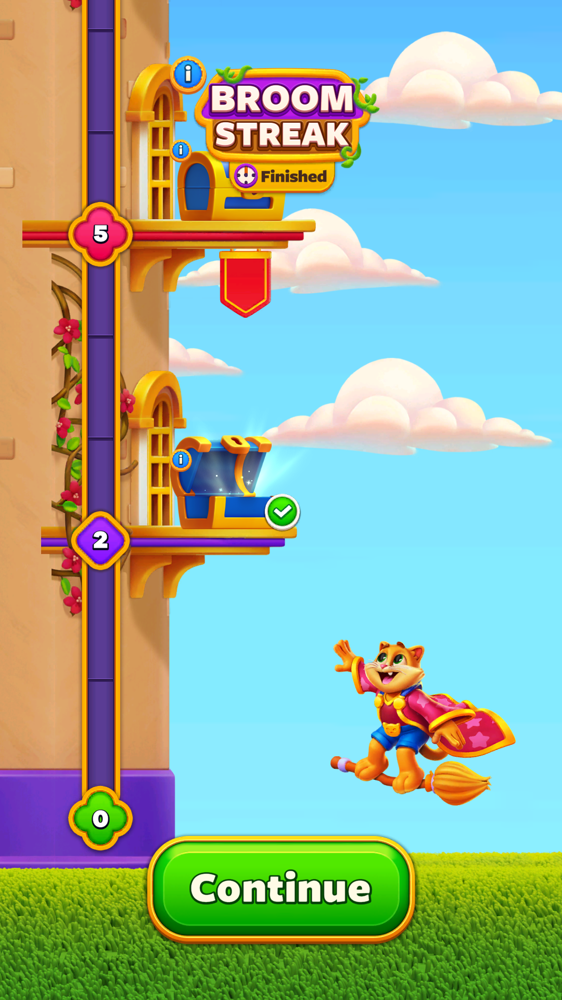
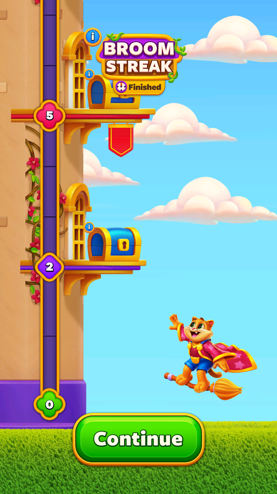
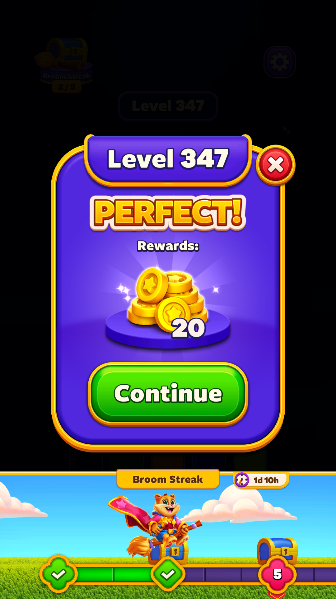
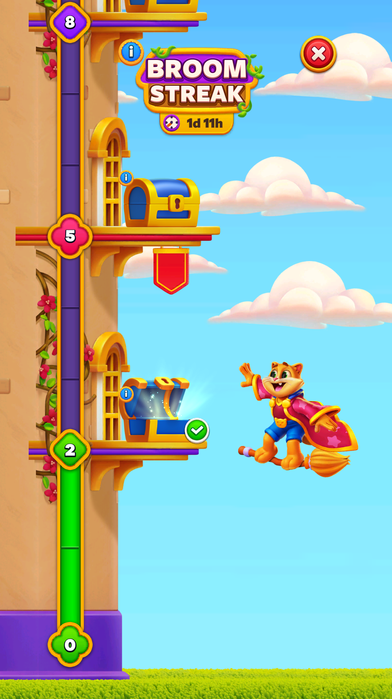
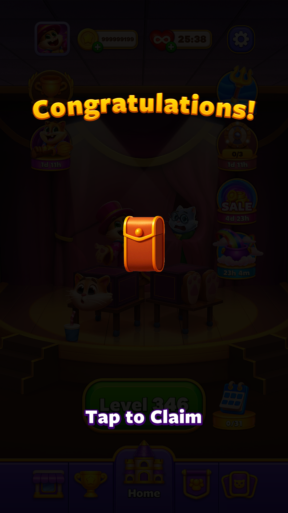
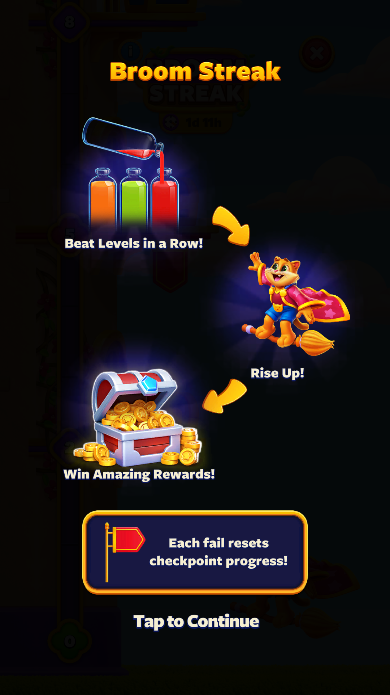
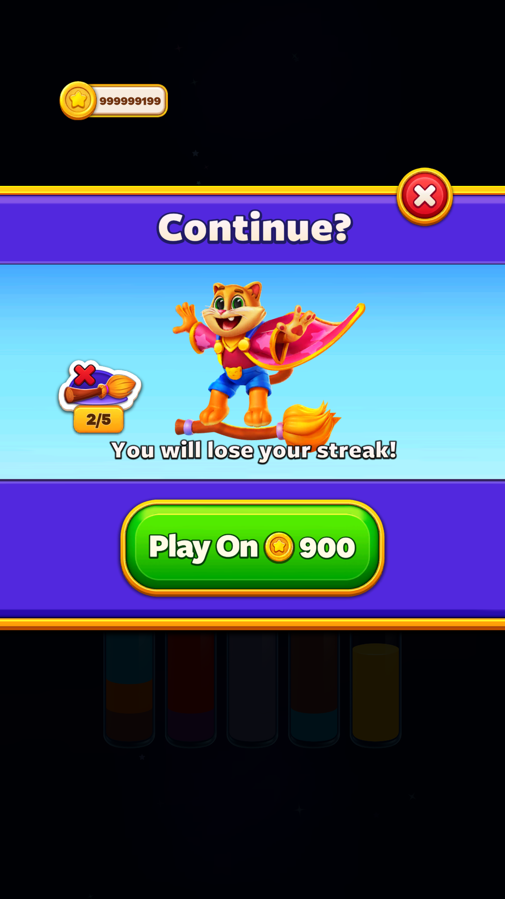

Broom Streak (Chuỗi thắng v2)
Giữ sức ép chuỗi thắng nhưng giảm mất mát bằng checkpoint, giúp người chơi thấy phần tiến bộ còn giữ được sau thất bại.
2 UC có nhánh liên quan tới case quan sát. Chưa có kết luận toàn bộ tính năng hoặc mọi UC đã pass. Xem bằng chứng và phần còn thiếu.
Thiết kế chi tiết
Tóm tắt thiết kế
Giữ sức ép chuỗi thắng nhưng giảm mất mát bằng checkpoint, giúp người chơi thấy phần tiến bộ còn giữ được sau thất bại.
Thắng liên tiếp → qua checkpoint/rương → thua lùi checkpoint → leo tiếp.
Thiết kế đọc từ dossier và nguồn đã đối chiếu. Outcome là expected; câu ghi round2 là actual theo case, không phải full-feature pass.
9 ảnh chụp có nguồn · ảnh hiện ngay trong khung, bấm để mở ảnh gốc. Màu nhãn phân biệt playtest, lịch sử và ngữ cảnh.




Luồng người chơi từng bước
- 01
Leo thêm một bậc
Người chơi và hệ thốngThắng level rồi trở về Home.
Điều kiện / luật: Một chiến thắng tăng chuỗi; bảng có checkpoint riêng, không phải mọi rương là checkpoint.
Kết quả theo đặc tả: Mèo/chổi tiến lên mốc mới.

Ảnh lịch sử Trên popup thắng màn: thanh Broom Streak chạy từ mốc 2 sang tích xanh, rương mốc 5 ở cuốiẢnh chụp lịch sử · giữ snapshot và điều kiện trong chú thíchHồ sơ ảnh lịch sử - 02
Thua nhưng giữ nền tiến độ
Người chơi và hệ thốngThua một level trong chuỗi.
Điều kiện / luật: Rơi về checkpoint gần nhất; các checkpoint được ghi 0/5/11/22/33/60 trong hồ sơ.
Kết quả theo đặc tả: Không diễn giải như Tower reset về 0.
- 03
Nhận rương mốc
Người chơi và hệ thốngVượt mốc có reward.
Điều kiện / luật: Default và cache 10/10 đổi quà ở mốc 2 và 5; phải đọc cùng snapshot.
Kết quả theo đặc tả: Rương nhận đúng phiên bản bảng thưởng.

Ảnh lịch sử Thắng 2 màn liên tiếp: mèo bay lên mốc 2, rương mốc 2 mở (dấu tích xanh) — thưởng  15 phút mạng vô hạn +
15 phút mạng vô hạn +  2 gói thẻẢnh chụp lịch sử · giữ snapshot và điều kiện trong chú thíchHồ sơ ảnh lịch sử
2 gói thẻẢnh chụp lịch sử · giữ snapshot và điều kiện trong chú thíchHồ sơ ảnh lịch sử
Ảnh lịch sử Nhận thưởng rương Broom Streak: "Congratulations! Tap to Claim" — gói thẻ (Collection pack)Ảnh chụp lịch sử · giữ snapshot và điều kiện trong chú thíchHồ sơ ảnh lịch sử


Quy tắc cần nắm
| Quy tắc | Hành vi theo nguồn | Căn cứ |
|---|---|---|
| Leo thêm một bậc | Một chiến thắng tăng chuỗi; bảng có checkpoint riêng, không phải mọi rương là checkpoint. | |
| Thua nhưng giữ nền tiến độ | Rơi về checkpoint gần nhất; các checkpoint được ghi 0/5/11/22/33/60 trong hồ sơ. | |
| Nhận rương mốc | Default và cache 10/10 đổi quà ở mốc 2 và 5; phải đọc cùng snapshot. |
Số liệu & phần thưởng
Phần thưởng
BẢNG 11 BẬC BROOM STREAK (BroomStreakConfigModel.json)
| Mốc | Điều kiện | Phần thưởng |
|---|---|---|
| Bậc 0 (checkpoint) | 0 thắng liên tiếp | Không có thưởng |
| Bậc 2 | 2 thắng liên tiếp, rương loại 1 |  50Coin 50Coin |
| Bậc 5 (checkpoint) | 5 thắng liên tiếp, rương loại 2 | 15 phút Unlimited Life |
| Bậc 8 | 8 thắng liên tiếp, rương loại 2 |  1 Undo 1 Undo |
| Bậc 11 (checkpoint) | 11 thắng liên tiếp, rương loại 3 | 200Coin |
| Bậc 17 | 17 thắng liên tiếp, rương loại 3 | 1 Undo 15 phút Unlimited Life |
| Bậc 22 (checkpoint) | 22 thắng liên tiếp, rương loại 4 |  300 coin 15 phút Unlimited Life 300 coin 15 phút Unlimited Life |
| Bậc 28 | 28 thắng liên tiếp, rương loại 5 |  1 Shuffle 30 phút Unlimited Life 1 Shuffle 30 phút Unlimited Life |
| Bậc 33 (checkpoint) | 33 thắng liên tiếp, rương loại 6 | 500 coin 1 giờ Unlimited Life |
| Bậc 42 | 42 thắng liên tiếp, rương loại 6 |  1 Extra Bottle 1 giờ Unlimited Life 1 Extra Bottle 1 giờ Unlimited Life |
| Bậc 60 (checkpoint, cuối) | 60 thắng liên tiếp, rương loại 7 | 1200 coin 1 Undo 1 Shuffle 1 Extra Bottle 1 giờ Unlimited Life |
BẢN THƯỞNG KHI COLLECTION ĐANG BẬT (RewardModelWithCollection)
| Mốc | Điều kiện | Phần thưởng |
|---|---|---|
| Bậc 5 | Collection bật | 15 phút Unlimited Life 1 Collection Pack loại 1 |
| Bậc 8 | Collection bật | 1 Undo  1 Collection Pack loại 3 1 Collection Pack loại 3 |
| Bậc 17 | Collection bật | 1 Undo 15 phút Unlimited Life 1 Collection Pack loại 3 |
| Bậc 22 | Collection bật | 300 coin 15 phút Unlimited Life 1 Collection Pack loại 3 |
| Bậc 33 | Collection bật | 500 coin 1 giờ Unlimited Life 1 Collection Pack loại 3 |
| Bậc 60 | Collection bật | 1200 coin 1 Undo 1 Shuffle 1 Extra Bottle 1 giờ Unlimited Life 1 Collection Pack loại 5 |
| Bậc 2, 11, 28, 42 | Không có bản Collection riêng | Giữ nguyên phần thưởng thường |
CHECKPOINT VÀ MỨC RƠI KHI THUA
| Mốc | Điều kiện | Phần thưởng |
|---|---|---|
| Chuỗi 0–4 | Thua khi đang ở 0–4 | Rơi về bậc 0 |
| Chuỗi 5–10 | Thua khi đang ở 5–10 | Rơi về bậc 5 |
| Chuỗi 11–21 | Thua khi đang ở 11–21 | Rơi về bậc 11 |
| Chuỗi 22–32 | Thua khi đang ở 22–32 | Rơi về bậc 22 |
| Chuỗi 33–59 | Thua khi đang ở 33–59 | Rơi về bậc 33 |
| Chuỗi 60 | Đã đạt bậc cuối | Rơi về bậc 60 (không mất gì thêm) |
TRẠNG THÁI SỰ KIỆN VÀ NGUỒN MỞ POPUP
| Mốc | Điều kiện | Phần thưởng |
|---|---|---|
| NoCachedEvent = 0 | Chưa fetch được sự kiện | Không hiện gì |
| NotIntroduced = 1 | Chưa giới thiệu cho người chơi | Chờ popup giới thiệu |
| InProgress = 2 | Sự kiện đang chạy | Hiện icon banner popup |
| TimeIsUp = 3 | Hết giờ | Mở popup kết quả |
| Claimed = 4 / ClaimedAndTimeIsUp = 5 | Đã nhận thưởng | Kết thúc vòng đời |
| InsufficientLevel = 6 | Level < 50 | Chưa mở khóa |
| Disable = 7 | IsEnabled = false | Tắt hoàn toàn |
| BroomStreakSource | Nguồn mở popup | None=0 LobbyIcon=1 EventStart=2 EventFinish=3 EventClaimRewards=4 TryAgain=5 |
| BroomStreakPopUpState | Layout popup | FirstShowEver=0 FirstShow=1 InProgress=2 Result=3 |
| BroomStreakCatState | Hoạt ảnh mèo | Idle=0 Rise=1 Fall=2 IdleBanner=3 FallPopup=4 |
THÔNG SỐ HOẠT ẢNH
| Mốc | Điều kiện | Phần thưởng |
|---|---|---|
| BroomStreakBannerConfig.CatMoveDuration | Mèo di chuyển | 0 85 giây |
| BroomStreakBannerConfig.BroomStreakBannerCatMoveDuration | Mèo trên banner riêng | 0 9 giây |
| BroomStreakBannerConfig.CatPrepareDuration / CatTiltRotationZ | Mèo chuẩn bị và nghiêng | 0 25 giây / -22 độ |
| BroomStreakBannerConfig.DistanceBetweenMainSteps | Khoảng cách giữa các bậc chính | 3 75 |
| BroomStreakBannerConfig.ContainerMoveDuration / RevealMainStepTime | Cuộn khung và mở bậc | 1 giây / 0 6 giây |
| BroomStreakAnimationsConfig.CatMoveDuration | Mèo trong popup | 1 1 giây |
| BroomStreakAnimationsConfig.RiseDelayAfterStart | Trễ trước khi mèo leo | 0 2 giây |
| BroomStreakAnimationsConfig.ProgressDuration / ScrollTweenDuration | Đổ thanh tiến độ và cuộn | 1 giây / 1 giây |
| BroomStreakAnimationsConfig.RewardsRevealDelay / DelayBetweenReveals | Mở rương khi nhận dồn | 1 7 giây / 0 18 giây |
| BroomStreakAnimationsConfig.RevealAnimationChestOffset | Độ lệch rương lúc mở | 0 6 |
| BroomStreakAnimationsConfig.MainStepUnlockScale | Phóng to bậc khi mở khóa | (1 3 1 3 1) |
| BroomStreakAnimationsConfig.MainStepFirstScaleDuration / SecondScaleDuration | Hai nhịp phóng to bậc | 0 2 giây / 0 18 giây |
| BroomStreakAnimationsConfig.ChestGreenTickStartTime / ChestParticleStartTime | Dấu tích và hạt trên rương | 0 42 giây / 0 6 giây |
| BroomStreakAnimationsConfig.ScrollBarMaxSize / MinSize / ParallaxYPosition | Cuộn danh sách bậc và nền | 66 / -8 9 / 10 |
Phần thưởng theo code
| Ngữ cảnh | Phần thưởng | Evidence |
|---|---|---|
| Snapshot 10/10/2026: mốc 2 | 15 phút limitless life khi dùng rewardModelWithCollection thêm 1 CollectionPack loại 1. Không đọc số in trên icon pack thành số lượng gói. | facts/runtime/test_20261010/before/CachedRemoteConfigs → broomStreakConfigModel.steps[1] |
| Snapshot 10/10/2026: mốc 5 (checkpoint) | 50 coin ở reward gốc có primaryRewards thay thế cần RewardUtil.GetAvailableReward xử lý không cộng tất cả các nhánh. | facts/runtime/test_20261010/before/CachedRemoteConfigs → broomStreakConfigModel.steps[2] |
| Bậc 2 — default đóng gói; xem snapshot 10/10 bên dưới | Rương: 50 Coin | BroomStreakConfigModel.json Steps[1] |
| Bậc 5 (checkpoint) — default đóng gói; xem snapshot 10/10 bên dưới | Rương: Unlimited Life 15 phút ( 1 CollectionPack loại 1 khi Collection bật) | BroomStreakConfigModel.json Steps[2] |
| Bậc 8 | Rương: 1 Undo ( 1 CollectionPack loại 3) | BroomStreakConfigModel.json Steps[3] |
| Bậc 11 (checkpoint) | Rương: 200 Coin | BroomStreakConfigModel.json Steps[4] |
| Bậc 17 | Rương: 1 Undo Unlimited Life 15 phút ( 1 CollectionPack loại 3) | BroomStreakConfigModel.json Steps[5] |
| Bậc 22 (checkpoint) | Rương: 300 Coin Unlimited Life 15 phút ( 1 CollectionPack loại 3) | BroomStreakConfigModel.json Steps[6] |
| Bậc 28 | Rương: 1 Shuffle Unlimited Life 30 phút | BroomStreakConfigModel.json Steps[7] |
| Bậc 33 (checkpoint) | Rương: 500 Coin Unlimited Life 1 giờ ( 1 CollectionPack loại 3) | BroomStreakConfigModel.json Steps[8] |
| Bậc 42 | Rương: 1 ExtraBottle Unlimited Life 1 giờ | BroomStreakConfigModel.json Steps[9] |
| Bậc 60 (checkpoint cuối) | Rương: 1200 Coin 1 Undo 1 Shuffle 1 ExtraBottle Unlimited Life 1 giờ ( 1 CollectionPack loại 5) | BroomStreakConfigModel.json Steps[10] |
Số liệu chính
| Chỉ số | Giá trị | Nguồn |
|---|---|---|
| Level mở khóa Broom Streak | 50 (mặc định client) | BroomStreakConfigModel.json FirstLevelToShow |
| Bật/tắt sự kiện | false (mặc định client) | BroomStreakConfigModel.json IsEnabled |
| tournamentType mặc định | 1 | BroomStreakConfigModel.json EventType |
| Hiện icon chuỗi trong màn chơi | true | BroomStreakConfigModel.json ShouldShowInLevelIcon |
| Số bậc trong bảng | 11 bậc (0, 2, 5, 8, 11, 17, 22, 28, 33, 42, 60) | BroomStreakConfigModel.json Steps |
| Số checkpoint | 6 (bậc 0, 5, 11, 22, 33, 60) | BroomStreakConfigModel.json Steps[*].IsCheckpoint |
| Bậc cuối cùng | 60 thắng liên tiếp | BroomStreakConfigModel.json Steps[10].Step |
| Số mức hình ảnh rương | 7 (ChestViewType 1–7) | BroomStreakConfigModel.json Steps[*].ChestViewType |
| Phần thưởng nhỏ nhất | 50 coin (bậc 2) | Steps[1].RewardModel.Rewards[0] |
| Phần thưởng lớn nhất | 1200 coin, 1 Undo, 1 Shuffle, 1 Extra Bottle, 1 giờ Unlimited Life (bậc 60) | Steps[10].RewardModel |
| Tổng coin từ toàn bảng | 2250 coin (50 + 200 + 300 + 500 + 1200) | Tổng Steps[*].RewardModel coin |
| Tổng Unlimited Life từ toàn bảng | 4 giờ 15 phút (15 + 15 + 15 + 30 + 60 + 60 + 60 phút) | Tổng Steps[*].RewardModel timeSpan |
| Định dạng readable event id | bs_{type}_{yyyyMMdd} | BroomStreakService.GetReadableEventId |
| Số trạng thái sự kiện | 8 (NoCachedEvent=0 … Disable=7) | BroomStreakStateType |
| Số nguồn mở popup | 6 (None=0 … TryAgain=5) | BroomStreakSource |
| Loại nhiệm vụ Wheel of Fortune | BroomStreakStepReach = 4 | WheelOfFortuneTaskType |
| Mèo di chuyển trên banner | 0,85 giây (0,9 giây trên banner riêng) | BroomStreakBannerConfig.CatMoveDuration |
| Mèo di chuyển trong popup | 1,1 giây | BroomStreakAnimationsConfig.CatMoveDuration |
| Khoảng cách giữa các bậc chính | 3,75 | BroomStreakBannerConfig.DistanceBetweenMainSteps |
| Thời gian mở một bậc | 0,6 giây | BroomStreakBannerConfig.RevealMainStepTime |
| Trễ trước khi mở rương dồn | 1,7 giây | BroomStreakAnimationsConfig.RewardsRevealDelay |
| Trễ giữa hai rương liên tiếp | 0,18 giây | BroomStreakAnimationsConfig.DelayBetweenReveals |
| Phóng to bậc khi mở khóa | 1,3 lần | BroomStreakAnimationsConfig.MainStepUnlockScale |
| Góc nghiêng mèo | -22 độ | BroomStreakBannerConfig.CatTiltRotationZ |
| Loại rương (CurrencyType) | 13 (Chest), số lượng 1 mỗi bậc | Steps[*].RewardModel.CurrencyType / Amount |
Các quyết định trong luồng
| Tình huống | Cách xử lý theo nguồn | Căn cứ |
|---|---|---|
| Checkpoint thay đổi cảm giác thua thế nào? | Mất một phần đường leo thay vì toàn bộ chuỗi; đây là khác biệt luật cần ghi rõ khi đặt hai event cạnh nhau. | Nhận định thiết kế dựa trên cơ chế, không phải kết quả A/B. |
Nhánh lỗi và phục hồi
| Điều kiện | Hành vi mong đợi | Phạm vi đã kiểm |
|---|---|---|
| Gián đoạn hoặc kết thúc Broom Streak (chuỗi thắng v2) | Nhận dồn sau offline cần tôn trọng mốc đã nhận và checkpoint, không phát lại rương cũ. | Đọc source/UC; không thực hiện runtime mới trong lượt biên tập. |
Nhận định & vận dụng
Mất một phần đường leo thay vì toàn bộ chuỗi; đây là khác biệt luật cần ghi rõ khi đặt hai event cạnh nhau.
Phân tích thiết kế, chưa đo retention/conversion.
Ảnh chụp bổ sung & nguồn bằng chứng
Mô tả trạng thái hoặc bước nhìn thấy trong ảnh và ngữ cảnh case; không nâng preview, cache hay lỗi thành grant, online hoặc full UC pass.
Không coi ảnh lịch sử hoặc ảnh ép bật bằng fixture là trạng thái production hiện tại.
Những ảnh còn lại của tính năng được giữ mở sẵn bên dưới. Các ảnh đã đặt ở phần tóm tắt hoặc bước liên quan không lặp lại trong gallery này.

 15 phút mạng vô hạn + 2 gói thẻ; mèo cưỡi chổi ở mốc 0Ảnh chụp lịch sử · giữ snapshot và điều kiện trong chú thíchHồ sơ ảnh lịch sử
15 phút mạng vô hạn + 2 gói thẻ; mèo cưỡi chổi ở mốc 0Ảnh chụp lịch sử · giữ snapshot và điều kiện trong chú thíchHồ sơ ảnh lịch sử



900 coinẢnh chụp lịch sử · giữ snapshot và điều kiện trong chú thíchHồ sơ ảnh lịch sửCase đầy đủ: expected, actual và ledger · Ảnh lịch sử và tài nguyên gốc
Tổng quan & điều kiện mở
Mô tả
- Broom Streak là thế hệ thứ hai của sự kiện chuỗi thắng; analytics dùng hậu tố '_v2' còn TowerWinStreak là bản v1.
- Con mèo cưỡi chổi leo lên theo số level thắng liên tiếp, đi qua bảng 11 bậc từ 0 tới 60.
- Sáu bậc được đánh dấu IsCheckpoint: 0, 5, 11, 22, 33 và 60.
- Khác biệt lớn nhất so với TowerWinStreak: khi thua, người chơi KHÔNG rơi về 0 mà chỉ rơi về checkpoint gần nhất đã vượt.
- Mỗi bậc (trừ bậc 0) trả một rương với nội dung tăng dần từ 50 coin tới gói lớn ở bậc 60.
- Nhiều bậc có bản RewardModelWithCollection thêm Collection Pack khi tính năng Collection đang bật.
- Rương có 7 mức hình ảnh (ChestViewType 1–7) để thể hiện độ quý tăng dần.
- Bảng mốc được chụp lại vào cache khi sự kiện bắt đầu, nên đổi remote config giữa chừng không ảnh hưởng người đang chơi.
- Sự kiện có icon lobby, banner mèo-chổi, icon trong màn chơi và cảnh báo khi người chơi định thoát level.
- Đạt bậc còn tính vào nhiệm vụ BroomStreakStepReach (4) của Wheel of Fortune và cho điểm Magic Lab.
Mở khóa & điểm vào
BroomStreakStateService.GetEventState(): Disable(7) nếu BroomStreakConfigModel.IsEnabled == false; InsufficientLevel(6) nếu level < FirstLevelToShow; NoCachedEvent(0) nếu chưa fetch; NotIntroduced(1); InProgress(2); TimeIsUp(3); Claimed(4); ClaimedAndTimeIsUp(5). Client default: IsEnabled=false, FirstLevelToShow=50, EventType=1, ShouldShowInLevelIcon=true (Resources/defaultconfigs/BroomStreakConfigModel.json). TowerWinStreak có hàm IsBroomStreakEnabled() để nhường chỗ khi Broom Streak bật.
Điểm vào:
- Nút lobby Broom Streak (IsLobbyIconVisible / IsLobbyIconVisibleAndNotIntroduced)
- Banner mèo-chổi trên lobby (ShouldShowBroomStreakBanner)
- Icon trong màn chơi khi ShouldShowInLevelIcon (ShouldShowInLevelStreakView)
- Popup tự mở khi về lobby / mở app (ShouldOpenAutomaticallyOnLobbyReturn / ShouldOpenAutomaticallyOnSessionStart, trả kèm BroomStreakSource)
- Chuỗi welcome ở Home (ShouldShowForceHomeWelcoming)
- Popup xác nhận thoát level (ShouldShowOnAreYouSure)
- Màn Try Again có animation thất bại (ShouldShowFailAnimationOnTryAgain)
Các sự kiện liên quan
Luồng chi tiết theo nguồn
Cách hoạt động
- BroomStreakStateService.GetEventState() xét Disable (7) khi IsEnabled = false, InsufficientLevel (6) khi level < 50, NoCachedEvent (0) khi chưa fetch, rồi NotIntroduced (1) / InProgress (2).
- TryFetchCurrentEvent() gọi BroomStreakRemoteService lấy BroomStreakEventInfoResponse{tournamentID, tournamentType, startTime, finishTime}.
- TryStartNewEvent(response) so EventId với cache; nếu mới thì StartNewEvent() tạo BroomStreakCache và chụp bảng Steps vào BroomStreakConfigModelCache.
- GetReadableEventId() dựng id analytics 'bs_{type}_{yyyyMMdd}' (fallback 'bs_unknown_data'); bắn broom_streak_joined kèm max_step_streak.
- Thắng level: TryIncreaseWinStreak() gọi IncreaseWinCount() tăng WinCount và cập nhật MaxWinCount cùng MaxWinCountRecord.
- OnStepReached(stepConfig, winCount, stepIndex) chạy khi chạm một bậc; mèo chuyển sang trạng thái Rise (1).
- Thua hoặc bỏ level: TryResetWinStreak() lưu LastSeenWinCount, tính GetCheckPointWinCount() rồi FallDownTo(checkPointWinCount).
- Mèo chuyển sang Fall (2) hoặc FallPopup (4); SetLastSeenCircleProgressBarFillRatioToPrevious() cho phép chạy hoạt ảnh rơi.
- Nhận thưởng: GiveRewardsBetweenLastSeenAndCurrentWinCount() duyệt các bậc trong khoảng (LastSeenWinCount, WinCount].
- GetUpToDateStepRewardModel(stepConfig) chọn RewardModel hoặc RewardModelWithCollection tùy tính năng Collection có bật không.
- RewardService trao thưởng, SetMaxClaimedStepIndex(step) và SetLastSeenWinCount(winCount) cập nhật tiến độ, bắn broom_streak_reward_claim_v2.
- Vòng tròn tiến độ nút lobby dùng GetCurrentMainStepFillRatio() so với GetCachedLastSeenCircleProgressBarFillRatio() để chạy hoạt ảnh.
- Trên banner, mèo di chuyển trong 0,85 giây (0,9 giây trên banner riêng), khoảng cách giữa các bậc chính là 3,75 và mở bậc mất 0,6 giây.
- Đạt bậc 60: IsReachedMaxWinCount() = true, nhận rương ChestViewType 7 và bắn broom_streak_won_v2.
- Kết thúc: GetRemainingSeconds() về 0 chuyển sang TimeIsUp (3); ClaimEvent() đặt IsClaimed và bắn broom_streak_finished_v2, state sang Claimed (4) hoặc ClaimedAndTimeIsUp (5).
Luồng chi tiết theo code
InitializeData/IntervalUpdate → BroomStreakStateService.ShouldFetchCurrentEvent() → TryFetchCurrentEvent() → FetchCurrentEvent() gọi BroomStreakRemoteService lấy BroomStreakEventInfoResponse{tournamentID, tournamentType, startTime, finishTime}. TryStartNewEvent(response) so EventId với cache; nếu mới → BroomStreakDataService.StartNewEvent(response, BroomStreakConfigModel) tạo BroomStreakCache{EventId, StartTime, FinishTime, IsEventIntroduced, EventType, IsClaimed, BroomStreakConfigModel (bản chụp BroomStreakConfigModelCache)} và gửi analytics broom_streak_joined (params tournament_id, readable_event_id, start_time, remaining_duration, progress, max_step_streak). GetReadableEventId() dựng 'bs_{type}_{start:yyyyMMdd}' (fallback 'bs_unknown_data'). Trong phiên: thắng level → TryIncreaseWinStreak() (nếu CanIncreaseScore()) → BroomStreakDataService.IncreaseWinCount() (WinCount+1, cập nhật MaxWinCount/MaxWinCountRecord); OnStepReached(stepConfig, winCount, stepIndex) xử lý khi chạm một bậc. Thua/bỏ level → TryResetWinStreak() (nếu CanResetScore()): pseudo-C lưu LastSeenWinCount = WinCount rồi tính GetCheckPointWinCount() — duyệt Steps chọn Step lớn nhất <= winCount có IsCheckpoint == true — và gọi BroomStreakDataService.FallDownTo(checkPointWinCount); LastSeenWinCountBeforeFallDown giữ số cũ để hiển thị; LastSeenMaxClaimedStepIndex được cập nhật. Nhận thưởng: GiveRewardsAndCacheLastSeenWinCount() → GiveRewardsBetweenLastSeenAndCurrentWinCount() duyệt các bậc trong khoảng (LastSeenWinCount, WinCount], GetUpToDateStepRewardModel(stepConfig) chọn RewardModel hoặc RewardModelWithCollection, RewardService trao thưởng, EventSender.SendBroomStreakClaimReward(rewardsAsString, rewardIndex) (broom_streak_reward_claim_v2). HasBulkRewardInQueue()/GiveBulkRewardInQueue() xử lý khi có nhiều bậc dồn. Vòng tròn tiến độ nút lobby: GetCurrentMainStepFillRatio()/GetMainStepFillRatio(winCount)/GetCachedLastSeenCircleProgressBarFillRatio()/SetLastSeenCircleProgressBarFillRatioToPrevious(). Kết thúc: GetRemainingSeconds()/GetEndDate() → TimeIsUp(3); ClaimEvent() → BroomStreakDataService.ClaimEvent() đặt IsClaimed; analytics broom_streak_finished_v2; state Claimed(4)/ClaimedAndTimeIsUp(5).
Use case (15)
Đặc tả UC mô tả hành vi theo nguồn. Kết quả mong đợi không phải kết quả đã chạy; case quan sát được liên kết riêng ở từng UC.
Bấm vào từng use case để mở. Mở/đóng tất cả
UC-01 Kiểm tra điều kiện và hiện icon/banner
Chưa có case trực tiếp trong hai lượt review 15–16/11.
Các bước- BroomStreakStateService.GetConfig() lấy BroomStreakConfigModel
- GetEventState() trả NoCachedEvent(0)/NotIntroduced(1)/InProgress(2)/TimeIsUp(3)/Claimed(4)/ClaimedAndTimeIsUp(5)/InsufficientLevel(6)/Disable(7)
- IsLobbyIconVisible() / IsLobbyIconVisibleAndNotIntroduced() / ShouldShowBroomStreakBanner()
- GetLiveOpsStateForLevelEvent() cung cấp trạng thái cho analytics level
| Actor | System |
|---|---|
| Trigger | Vào lobby / IntervalUpdate |
| Điều kiện | RemoteConfigs sẵn sàng |
| Kết quả mong đợi theo nguồn | Nút lobby + banner mèo-chổi hiện/ẩn |
| Quy tắc / số liệu | Client default: IsEnabled=false, FirstLevelToShow=50, EventType=1 |
| Bằng chứng đặc tả | BroomStreakStateService.GetEventState; BroomStreakStateService.IsLobbyIconVisible; BroomStreakStateService.ShouldShowBroomStreakBanner; BroomStreakService.GetLiveOpsStateForLevelEvent |
UC-02 Fetch sự kiện và bắt đầu chuỗi mới
Chưa có case trực tiếp trong hai lượt review 15–16/11.
Các bước- BroomStreakService.TryFetchCurrentEvent() → FetchCurrentEvent()
- BroomStreakRemoteService lấy BroomStreakEventInfoResponse{tournamentID, tournamentType, startTime, finishTime}
- TryStartNewEvent(response) so EventId với BroomStreakDataService.GetEventId()
- StartNewEvent(response, config) chụp bảng Steps vào BroomStreakConfigModelCache
- EventSender.SendBroomStreakStarted (broom_streak_joined)
- GetReadableEventId() dựng 'bs_{type}_{yyyyMMdd}'
| Actor | Server |
|---|---|
| Trigger | InitializeData / IntervalUpdate khi ShouldFetchCurrentEvent() |
| Điều kiện | Sự kiện bật |
| Kết quả mong đợi theo nguồn | BroomStreakCache mới; bảng mốc bị 'đóng băng' theo sự kiện |
| Quy tắc / số liệu | ShouldStartNewEvent() quyết định thời điểm; giống Tower, đổi remote config giữa chừng không ảnh hưởng người đang chơi |
| Bằng chứng đặc tả | BroomStreakService.TryFetchCurrentEvent; BroomStreakService.FetchCurrentEvent; BroomStreakService.TryStartNewEvent; BroomStreakDataService.StartNewEvent; BroomStreakStateService.ShouldStartNewEvent; BroomStreakService.GetReadableEventId |
UC-03 Thắng level → mèo leo lên 1 bậc
Chưa có case trực tiếp trong hai lượt review 15–16/11.
Các bước- BroomStreakService.TryIncreaseWinStreak()
- BroomStreakDataService.IncreaseWinCount() tăng WinCount, cập nhật MaxWinCount và MaxWinCountRecord
- OnStepReached(upToDateStepConfigModel, winCount, stepIndex) khi chạm một bậc trong bảng
- IsWinStreakIncreasedSinceLastSeen() / IsMainStepIncreasedSinceLastSeen() bật animation
- BroomStreakCatState chuyển Rise(1); BroomStreakActionState.Rise(0)
| Actor | Player |
|---|---|
| Trigger | Hoàn thành level |
| Điều kiện | BroomStreakStateService.CanIncreaseScore() == true |
| Kết quả mong đợi theo nguồn | Chuỗi tăng, mèo bay lên; bậc mới có thể mở rương |
| Quy tắc / số liệu | GetNextMainStep() / GetNextMainStepButReturnMaxIfPlayerReached() cho mốc kế |
| Bằng chứng đặc tả | BroomStreakService.TryIncreaseWinStreak; BroomStreakDataService.IncreaseWinCount; BroomStreakService.OnStepReached; BroomStreakService.IsWinStreakIncreasedSinceLastSeen; BroomStreakService.GetNextMainStep |

UC-04 Thua level → rơi về checkpoint gần nhất (không về 0)
Chưa có case trực tiếp trong hai lượt review 15–16/11.
Các bước- BroomStreakService.TryResetWinStreak()
- Pseudo-C lưu LastSeenWinCount = WinCount trước khi rơi
- GetCheckPointWinCount() duyệt Steps, chọn Step lớn nhất <= WinCount có IsCheckpoint == true
- BroomStreakDataService.FallDownTo(checkPointWinCount) đặt WinCount về mốc checkpoint đó
- LastSeenWinCountBeforeFallDown lưu số cũ; LastSeenMaxClaimedStepIndex được cập nhật
- SetLastSeenCircleProgressBarFillRatioToPrevious() để chạy animation rơi; IsPlayerFallDown() = true; BroomStreakCatState.Fall(2)/FallPopup(4)
| Actor | Player |
|---|---|
| Trigger | Thua hoặc bỏ level |
| Điều kiện | BroomStreakStateService.CanResetScore() == true |
| Kết quả mong đợi theo nguồn | Chỉ mất phần tiến độ từ checkpoint gần nhất trở lên — KHÁC hoàn toàn TowerWinStreak (reset về 0) |
| Quy tắc / số liệu | Checkpoint mặc định: bậc 0, 5, 11, 22, 33, 60 (IsCheckpoint = true) |
| Bằng chứng đặc tả | BroomStreakService.TryResetWinStreak; BroomStreakService.GetCheckPointWinCount; BroomStreakDataService.FallDownTo; BroomStreakDataService.GetLastSeenWinCountBeforeFallDown; BroomStreakService.IsPlayerFallDown; BroomStreakStateService.CanResetScore |
UC-05 Cảnh báo trước khi thoát level và animation thất bại
Chưa có case trực tiếp trong hai lượt review 15–16/11.
Các bước- BroomStreakStateService.ShouldShowOnAreYouSure() hiển thị mèo + số bậc sắp mất
- ShouldShowFailAnimationOnTryAgain(lastScoreBeforeFail) quyết định có chạy animation rơi ở màn Try Again không
- BroomStreakSource.TryAgain(5) dùng cho impression
| Actor | Player |
|---|---|
| Trigger | Bấm thoát / thua level |
| Điều kiện | Đang có chuỗi |
| Kết quả mong đợi theo nguồn | Người chơi thấy rõ hậu quả của việc thua → tăng chuyển đổi booster |
| Quy tắc / số liệu | - |
| Bằng chứng đặc tả | BroomStreakStateService.ShouldShowOnAreYouSure; BroomStreakStateService.ShouldShowFailAnimationOnTryAgain |
UC-06 Nhận rương của các bậc đã vượt
Chưa có case trực tiếp trong hai lượt review 15–16/11.
Các bước- BroomStreakService.GiveRewardsAndCacheLastSeenWinCount()
- GiveRewardsBetweenLastSeenAndCurrentWinCount() duyệt các bậc trong khoảng
- GetUpToDateStepRewardModel(stepConfig) chọn RewardModel hoặc RewardModelWithCollection (khi Collection bật)
- RewardService trao thưởng; BroomStreakDataService.SetMaxClaimedStepIndex(step) và SetLastSeenWinCount(winCount)
- EventSender.SendBroomStreakClaimReward(rewardsAsString, rewardIndex) (broom_streak_reward_claim_v2)
- IsCurrentWinCountHasChest() cho biết bậc hiện tại có rương hay không
| Actor | Player |
|---|---|
| Trigger | Về lobby / mở popup |
| Điều kiện | WinCount > LastSeenWinCount |
| Kết quả mong đợi theo nguồn | Rương mở, thưởng vào túi; ChestViewType 1-7 quyết định hình rương |
| Quy tắc / số liệu | Bậc 0 không có RewardModel |
| Bằng chứng đặc tả | BroomStreakService.GiveRewardsAndCacheLastSeenWinCount; BroomStreakService.GiveRewardsBetweenLastSeenAndCurrentWinCount; BroomStreakService.GetUpToDateStepRewardModel; BroomStreakDataService.SetMaxClaimedStepIndex; BroomStreakService.IsCurrentWinCountHasChest; EventSender.SendBroomStreakClaimReward |
UC-07 Nhận dồn nhiều rương sau khi offline
Chưa có case trực tiếp trong hai lượt review 15–16/11.
Các bước- BroomStreakService.HasBulkRewardInQueue()
- GiveBulkRewardInQueue() (Task) trao lần lượt với hoạt ảnh (RewardsRevealDelay 1.7s, DelayBetweenReveals 0.18s)
- GetLastSeenViewModels() dựng List<BroomStreakStepViewModel> để chạy animation từ trạng thái cũ
| Actor | System |
|---|---|
| Trigger | Quay lại game với nhiều bậc chưa nhận |
| Điều kiện | HasBulkRewardInQueue() == true |
| Kết quả mong đợi theo nguồn | Người chơi xem lại toàn bộ rương đã đạt trong một chuỗi hoạt ảnh |
| Quy tắc / số liệu | - |
| Bằng chứng đặc tả | BroomStreakService.HasBulkRewardInQueue; BroomStreakService.GiveBulkRewardInQueue; BroomStreakService.GetLastSeenViewModels |
UC-08 Vòng tròn tiến độ và animation mèo ở lobby
Chưa có case trực tiếp trong hai lượt review 15–16/11.
Các bước- GetCurrentMainStepFillRatio() = GetMainStepFillRatio(WinCount)
- GetCachedLastSeenCircleProgressBarFillRatio() lấy giá trị đã hiển thị lần trước
- MarkShowedCurrentCircleProgressBarFillRatio() / MarkShowedCurrentCircleProgressBarFillRatioAndOpenedPopUp() → BroomStreakDataService.SetCircleProgressBarFillRatio()
- BroomStreakStateService.ShouldShowBroomAnimationOnLobbyReturn() bật animation mèo
- Tham số từ BroomStreakBannerConfig: CatMoveDuration 0.85, BroomStreakBannerCatMoveDuration 0.9, DistanceBetweenMainSteps 3.75, RevealMainStepTime 0.6
| Actor | System |
|---|---|
| Trigger | Về lobby sau khi chuỗi đổi |
| Điều kiện | - |
| Kết quả mong đợi theo nguồn | Vòng tròn chạy mượt từ mốc cũ tới mốc mới, mèo bay lên/xuống |
| Quy tắc / số liệu | BroomStreakCatState: Idle(0), Rise(1), Fall(2), IdleBanner(3), FallPopup(4) |
| Bằng chứng đặc tả | BroomStreakService.GetCurrentMainStepFillRatio; BroomStreakService.GetCachedLastSeenCircleProgressBarFillRatio; BroomStreakService.MarkShowedCurrentCircleProgressBarFillRatio; BroomStreakDataService.SetCircleProgressBarFillRatio; BroomStreakStateService.ShouldShowBroomAnimationOnLobbyReturn |
UC-09 Popup tự mở theo ngữ cảnh
Chưa có case trực tiếp trong hai lượt review 15–16/11.
Các bước- BroomStreakStateService.ShouldOpenAutomaticallyOnLobbyReturn(out source) / ShouldOpenAutomaticallyOnSessionStart(out source)
- GetPopUpState() trả BroomStreakPopUpState: FirstShowEver(0), FirstShow(1), InProgress(2), Result(3)
- BroomStreakSource: None(0), LobbyIcon(1), EventStart(2), EventFinish(3), EventClaimRewards(4), TryAgain(5)
- EventSender.SendBroomStreakImpression(source) (broom_streak_impression_v2) với impression_source, current_streak, max_streak_current_tower
- MarkEventIntroduced() / BroomStreakDataService.MarkEventIntroducedEverInLifeTime()
- ShouldShowForceHomeWelcoming() ép chèn vào chuỗi welcome
| Actor | System |
|---|---|
| Trigger | Về lobby / mở app / Try Again |
| Điều kiện | State phù hợp |
| Kết quả mong đợi theo nguồn | Người chơi được giới thiệu sự kiện đúng thời điểm, không lặp |
| Quy tắc / số liệu | - |
| Bằng chứng đặc tả | BroomStreakStateService.ShouldOpenAutomaticallyOnLobbyReturn; BroomStreakStateService.ShouldOpenAutomaticallyOnSessionStart; BroomStreakStateService.GetPopUpState; BroomStreakStateService.ShouldShowForceHomeWelcoming; BroomStreakService.MarkEventIntroduced; EventSender.SendBroomStreakImpression |
UC-10 Đạt bậc cao nhất (60)
Chưa có case trực tiếp trong hai lượt review 15–16/11.
Các bước- BroomStreakService.IsReachedMaxWinCount() / GetMaxStepStreak()
- GetNextMainStepButReturnMaxIfPlayerReached() trả mốc lớn nhất
- Nhận rương lớn nhất (ChestViewType 7)
- EventSender.SendBroomStreakWon (broom_streak_won_v2)
| Actor | Player |
|---|---|
| Trigger | WinCount đạt mốc cuối |
| Điều kiện | - |
| Kết quả mong đợi theo nguồn | Hoàn thành sự kiện; chuỗi vẫn đếm tiếp cho MaxWinCountRecord |
| Quy tắc / số liệu | Bậc cuối mặc định = 60 |
| Bằng chứng đặc tả | BroomStreakService.IsReachedMaxWinCount; BroomStreakService.GetMaxStepStreak; BroomStreakService.GetMaxWinCountRecord; EventSender.SendBroomStreakWon |
UC-11 Kết thúc sự kiện và claim
Có bằng chứng một số nhánh; chưa full UC pass.
15/11/2026 · Kết thúc BroomStreak từ cacheCác bước- GetRemainingSeconds() / GetEndDate() (ConvertToUtc) / GetStartTimeAsUnix()
- GetEventState() → TimeIsUp(3)
- BroomStreakService.ClaimEvent() → BroomStreakDataService.ClaimEvent() đặt IsClaimed
- EventSender.SendBroomStreakFinished (broom_streak_finished_v2) với current_streak, max_streak_current_tower, tournament_id, tournament_start_time
- State → Claimed(4) / ClaimedAndTimeIsUp(5); popup mở với source EventFinish(3) hoặc EventClaimRewards(4)
| Actor | System |
|---|---|
| Trigger | Thời gian vượt finishTime |
| Điều kiện | Chưa claim |
| Kết quả mong đợi theo nguồn | Sự kiện đóng, chờ đợt mới từ server |
| Quy tắc / số liệu | - |
| Bằng chứng đặc tả | BroomStreakService.GetRemainingSeconds; BroomStreakService.GetEndDate; BroomStreakService.ClaimEvent; BroomStreakDataService.ClaimEvent; BroomStreakDataService.IsClaimed; EventSender.SendBroomStreakFinished |
UC-12 Đóng góp cho MagicLab và Wheel of Fortune
Chưa có case trực tiếp trong hai lượt review 15–16/11.
Các bước- BroomStreakStateService.CanGetScoreForMagicLab() cho phép tính điểm MagicLab
- BroomStreakService.IsAvailableForWheelOfFortune() / BroomStreakStateService.IsAvailableForWheelOfFortune()
- WheelOfFortuneService được inject vào .ctor; đạt bậc tính vào WheelOfFortuneTaskType.BroomStreakStepReach(4)
- Nếu sự kiện tắt, WOF gọi TryResetTaskProgress(BroomStreakStepReach)
| Actor | System |
|---|---|
| Trigger | Đạt bậc mới |
| Điều kiện | MagicLab / WOF bật |
| Kết quả mong đợi theo nguồn | Broom Streak là nguồn nhiệm vụ cho hai meta lớn |
| Quy tắc / số liệu | Key localization: MagicLabBroomStreakStepReachTaskDescription |
| Bằng chứng đặc tả | BroomStreakStateService.CanGetScoreForMagicLab; BroomStreakService.IsAvailableForWheelOfFortune; BroomStreakStateService.IsAvailableForWheelOfFortune; BroomStreakService..ctor |
UC-13 Theo dõi mốc đã nhận và checkpoint đã đạt
Có bằng chứng một số nhánh; chưa full UC pass.
15/11/2026 · Kết thúc BroomStreak từ cacheCác bước- BroomStreakDataService.GetMaxClaimedStepIndex() / SetMaxClaimedStepIndex(step)
- GetMaxClaimedCheckPointStepIndex() / SetMaxClaimedCheckPointStepIndex(step) / GetMaxClaimedCheckPointWinCount()
- GetLastSeenMaxClaimedStepIndex() / GetLastSeenMaxClaimedStepWinCount() / SetLastSeenMaxClaimedStepIndex(step)
- BroomStreakService.GetMaxClaimedCheckPointWinCount() cho UI biết mốc an toàn
| Actor | System |
|---|---|
| Trigger | Mở popup / chạy animation |
| Điều kiện | - |
| Kết quả mong đợi theo nguồn | UI hiển thị đúng bậc đã mở, checkpoint an toàn và bậc chưa nhận |
| Quy tắc / số liệu | Checkpoint đã đạt là mốc mà người chơi không thể rơi xuống dưới |
| Bằng chứng đặc tả | BroomStreakDataService.GetMaxClaimedStepIndex; BroomStreakDataService.GetMaxClaimedCheckPointStepIndex; BroomStreakDataService.GetMaxClaimedCheckPointWinCount; BroomStreakService.GetMaxClaimedCheckPointWinCount; BroomStreakDataService.GetLastSeenMaxClaimedStepIndex |
UC-14 Offline / lỗi fetch
Chưa có case trực tiếp trong hai lượt review 15–16/11.
Các bước- BroomStreakDataService.IsEventCached() == false → state NoCachedEvent(0)
- TryFetchCurrentEvent() thử lại ở IntervalUpdate kế
- Nếu đã có cache, chuỗi vẫn tăng/rơi bình thường vì toàn bộ tính toán ở client
| Actor | System |
|---|---|
| Trigger | Request thất bại |
| Điều kiện | - |
| Kết quả mong đợi theo nguồn | Không mất tiến độ khi mất mạng |
| Quy tắc / số liệu | - |
| Bằng chứng đặc tả | BroomStreakDataService.IsEventCached; BroomStreakService.TryFetchCurrentEvent; BroomStreakService.IntervalUpdate |
UC-15 Đồng bộ dữ liệu Broom Streak
Chưa có case trực tiếp trong hai lượt review 15–16/11.
Các bước- BroomStreakDataService.GetSyncName() = 'BroomStreakModel'
- SerializeModelForSync() gửi BroomStreakModel{MaxWinCountRecord, MaxWinCount, WinCount, MaxClaimedStepIndex, LastSeenMaxClaimedStepIndex, MaxClaimedCheckPointStepIndex, LastSeenWinCount, LastSeenWinCountBeforeFallDown, IsEventIntroducedEverInLifeTime, BroomStreakCache, CircleProgressBarFillRatio}
- OverwriteModelFromSync(data); DataSynced(); LateUpdate() lưu khi dirty; DeleteData() khi reset
| Actor | Server |
|---|---|
| Trigger | Sync / đổi thiết bị |
| Điều kiện | ISyncable |
| Kết quả mong đợi theo nguồn | Chuỗi, checkpoint và kỷ lục giữ nguyên khi đổi máy |
| Quy tắc / số liệu | - |
| Bằng chứng đặc tả | BroomStreakDataService.GetSyncName; BroomStreakDataService.SerializeModelForSync; BroomStreakDataService.OverwriteModelFromSync; BroomStreakDataService.DataSynced; BroomStreakDataService.DeleteData |
Playtest & phần chưa xác minh
Case ghi lại một chuỗi thao tác và phạm vi quan sát. Các bước chưa chạy và hợp đồng server vẫn giữ trạng thái riêng.
15/11/2026 Kết thúc BroomStreak từ cacheMS-R15-EVT07
15/11/2026 · build 0.0.3129 ARM64 · fixture offline · quan sát nhánh
Điều kiện: 0.0.3129 ARM64, level 351, UID offline; save fixture có sẵn và instance tháng10.
- MởBroom Finished
- Continue
Mong đợi
Kết thúc event, bảo toàn thưởng đã nhận.
Đã quan sát
Popup có mốc0/2/5, rương2 đãcheck. Continue vềHome và icon biến mất; isClaimed false→true, currency không đổi.
Giới hạn: Chỉ finalization cache; chưa thử progress/fail checkpoint hay thưởng chưa nhận.
Điều kiện cần để kiểm tiếp
Nhánh UC cần kiểm tiếp
Chưa có case vòng 2 cho feature này. Nếu icon còn tồn tại, kiểm tra vòng tiến độ/tooltip checkpoint và popup mốc chưa xem; chụp state sau reopen.
UC chưa có case: UC-01 UC-02 UC-03 UC-04 UC-05 UC-06 UC-07 UC-08 UC-09 UC-10 UC-12 UC-14 UC-15
Hồ sơ đầy đủ và trạng thái từng nhánh · Báo cáo đối soát 58 mục
Ảnh gốc & tài nguyên trong hồ sơ nền
Ảnh chụp màn hình (7)
7 ảnh chụp trong game (LDPlayer, bản 0.0.3129, tài khoản thử level 321 → 351 (07/10/2026)). Bấm ảnh để phóng to; ảnh chụp lịch sử mở PNG gốc. Nhãn UC dẫn tới use case tương ứng.
15 phút mạng vô hạn + 2 gói thẻ; mèo cưỡi chổi ở mốc 015 phút mạng vô hạn + 2 gói thẻ900 coinSegment & A/B
Checkpoint và reward Collection: Thay độ mất chuỗi và loại reward.
| Trục phân nhóm | Điều kiện chọn | Tác động thiết kế | Mức bằng chứng |
|---|---|---|---|
| Checkpoint và reward Collection | Mốc IsCheckpoint điều khiển rơi; RewardModelWithCollection chọn quà có pack. | Thay độ mất chuỗi và loại reward. | Không có cohort so sánh để kết luận checkpoint tăng retention. |
Assignment của tài khoản, tỷ lệ traffic và uplift: chưa được xác minh. Reward bucket, phân khúc thương mại và A/B experiment được phân biệt theo nguồn.
- Không có cohort so sánh để kết luận checkpoint tăng retention.
Tải tất cả dòng liên quan của feature · Registry 345 dòng nguồn duy nhất
Dữ liệu đầy đủ theo nguồn
Bản mặc định đóng gói trong APK 0.0.3129. Đây là dữ liệu có kiểu đầy đủ; config thực được server chọn cho một tài khoản là phạm vi khác.
BroomStreakConfigModel 162 giá trị / node rỗng
| Đường dẫn | Kiểu | Giá trị |
|---|---|---|
| $.IsEnabled | boolean | false |
| $.FirstLevelToShow | number | 50 |
| $.EventType | number | 1 |
| $.ShouldShowInLevelIcon | boolean | true |
| $.Steps[0].Step | number | 0 |
| $.Steps[0].IsCheckpoint | boolean | true |
| $.Steps[1].Step | number | 2 |
| $.Steps[1].IsCheckpoint | boolean | false |
| $.Steps[1].ChestViewType | number | 1 |
| $.Steps[1].RewardModel.CurrencyType | number | 13 |
| $.Steps[1].RewardModel.Amount | number | 1 |
| $.Steps[1].RewardModel.Rewards[0].CurrencyType | number | 1 |
| $.Steps[1].RewardModel.Rewards[0].Amount | number | 50 |
| $.Steps[2].Step | number | 5 |
| $.Steps[2].IsCheckpoint | boolean | true |
| $.Steps[2].ChestViewType | number | 2 |
| $.Steps[2].RewardModel.CurrencyType | number | 13 |
| $.Steps[2].RewardModel.Amount | number | 1 |
| $.Steps[2].RewardModel.Rewards[0].currencyType | number | 2 |
| $.Steps[2].RewardModel.Rewards[0].amount | number | 0 |
| $.Steps[2].RewardModel.Rewards[0].timeSpan | string | "00:15:00" |
| $.Steps[2].RewardModelWithCollection.CurrencyType | number | 13 |
| $.Steps[2].RewardModelWithCollection.Amount | number | 1 |
| $.Steps[2].RewardModelWithCollection.Rewards[0].currencyType | number | 2 |
| $.Steps[2].RewardModelWithCollection.Rewards[0].amount | number | 0 |
| $.Steps[2].RewardModelWithCollection.Rewards[0].timeSpan | string | "00:15:00" |
| $.Steps[2].RewardModelWithCollection.Rewards[1].currencyType | number | 14 |
| $.Steps[2].RewardModelWithCollection.Rewards[1].amount | number | 1 |
| $.Steps[2].RewardModelWithCollection.Rewards[1].CollectionPackType | number | 1 |
| $.Steps[3].Step | number | 8 |
| $.Steps[3].IsCheckpoint | boolean | false |
| $.Steps[3].ChestViewType | number | 2 |
| $.Steps[3].RewardModel.CurrencyType | number | 13 |
| $.Steps[3].RewardModel.Amount | number | 1 |
| $.Steps[3].RewardModel.Rewards[0].CurrencyType | number | 4 |
| $.Steps[3].RewardModel.Rewards[0].Amount | number | 1 |
| $.Steps[3].RewardModelWithCollection.CurrencyType | number | 13 |
| $.Steps[3].RewardModelWithCollection.Amount | number | 1 |
| $.Steps[3].RewardModelWithCollection.Rewards[0].CurrencyType | number | 4 |
| $.Steps[3].RewardModelWithCollection.Rewards[0].Amount | number | 1 |
| $.Steps[3].RewardModelWithCollection.Rewards[1].currencyType | number | 14 |
| $.Steps[3].RewardModelWithCollection.Rewards[1].amount | number | 1 |
| $.Steps[3].RewardModelWithCollection.Rewards[1].CollectionPackType | number | 3 |
| $.Steps[4].Step | number | 11 |
| $.Steps[4].IsCheckpoint | boolean | true |
| $.Steps[4].ChestViewType | number | 3 |
| $.Steps[4].RewardModel.CurrencyType | number | 13 |
| $.Steps[4].RewardModel.Amount | number | 1 |
| $.Steps[4].RewardModel.Rewards[0].CurrencyType | number | 1 |
| $.Steps[4].RewardModel.Rewards[0].Amount | number | 200 |
| $.Steps[5].Step | number | 17 |
| $.Steps[5].IsCheckpoint | boolean | false |
| $.Steps[5].ChestViewType | number | 3 |
| $.Steps[5].RewardModel.CurrencyType | number | 13 |
| $.Steps[5].RewardModel.Amount | number | 1 |
| $.Steps[5].RewardModel.Rewards[0].CurrencyType | number | 4 |
| $.Steps[5].RewardModel.Rewards[0].Amount | number | 1 |
| $.Steps[5].RewardModel.Rewards[1].currencyType | number | 2 |
| $.Steps[5].RewardModel.Rewards[1].amount | number | 0 |
| $.Steps[5].RewardModel.Rewards[1].timeSpan | string | "00:15:00" |
| $.Steps[5].RewardModelWithCollection.CurrencyType | number | 13 |
| $.Steps[5].RewardModelWithCollection.Amount | number | 1 |
| $.Steps[5].RewardModelWithCollection.Rewards[0].CurrencyType | number | 4 |
| $.Steps[5].RewardModelWithCollection.Rewards[0].Amount | number | 1 |
| $.Steps[5].RewardModelWithCollection.Rewards[1].currencyType | number | 2 |
| $.Steps[5].RewardModelWithCollection.Rewards[1].amount | number | 0 |
| $.Steps[5].RewardModelWithCollection.Rewards[1].timeSpan | string | "00:15:00" |
| $.Steps[5].RewardModelWithCollection.Rewards[2].currencyType | number | 14 |
| $.Steps[5].RewardModelWithCollection.Rewards[2].amount | number | 1 |
| $.Steps[5].RewardModelWithCollection.Rewards[2].CollectionPackType | number | 3 |
| $.Steps[6].Step | number | 22 |
| $.Steps[6].IsCheckpoint | boolean | true |
| $.Steps[6].ChestViewType | number | 4 |
| $.Steps[6].RewardModel.CurrencyType | number | 13 |
| $.Steps[6].RewardModel.Amount | number | 1 |
| $.Steps[6].RewardModel.Rewards[0].CurrencyType | number | 1 |
| $.Steps[6].RewardModel.Rewards[0].Amount | number | 300 |
| $.Steps[6].RewardModel.Rewards[1].currencyType | number | 2 |
| $.Steps[6].RewardModel.Rewards[1].amount | number | 0 |
| $.Steps[6].RewardModel.Rewards[1].timeSpan | string | "00:15:00" |
| $.Steps[6].RewardModelWithCollection.CurrencyType | number | 13 |
| $.Steps[6].RewardModelWithCollection.Amount | number | 1 |
| $.Steps[6].RewardModelWithCollection.Rewards[0].CurrencyType | number | 1 |
| $.Steps[6].RewardModelWithCollection.Rewards[0].Amount | number | 300 |
| $.Steps[6].RewardModelWithCollection.Rewards[1].currencyType | number | 2 |
| $.Steps[6].RewardModelWithCollection.Rewards[1].amount | number | 0 |
| $.Steps[6].RewardModelWithCollection.Rewards[1].timeSpan | string | "00:15:00" |
| $.Steps[6].RewardModelWithCollection.Rewards[2].currencyType | number | 14 |
| $.Steps[6].RewardModelWithCollection.Rewards[2].amount | number | 1 |
| $.Steps[6].RewardModelWithCollection.Rewards[2].CollectionPackType | number | 3 |
| $.Steps[7].Step | number | 28 |
| $.Steps[7].IsCheckpoint | boolean | false |
| $.Steps[7].ChestViewType | number | 5 |
| $.Steps[7].RewardModel.CurrencyType | number | 13 |
| $.Steps[7].RewardModel.Amount | number | 1 |
| $.Steps[7].RewardModel.Rewards[0].CurrencyType | number | 5 |
| $.Steps[7].RewardModel.Rewards[0].Amount | number | 1 |
| $.Steps[7].RewardModel.Rewards[1].currencyType | number | 2 |
| $.Steps[7].RewardModel.Rewards[1].amount | number | 0 |
| $.Steps[7].RewardModel.Rewards[1].timeSpan | string | "00:30:00" |
| $.Steps[8].Step | number | 33 |
| $.Steps[8].IsCheckpoint | boolean | true |
| $.Steps[8].ChestViewType | number | 6 |
| $.Steps[8].RewardModel.CurrencyType | number | 13 |
| $.Steps[8].RewardModel.Amount | number | 1 |
| $.Steps[8].RewardModel.Rewards[0].CurrencyType | number | 1 |
| $.Steps[8].RewardModel.Rewards[0].Amount | number | 500 |
| $.Steps[8].RewardModel.Rewards[1].currencyType | number | 2 |
| $.Steps[8].RewardModel.Rewards[1].amount | number | 0 |
| $.Steps[8].RewardModel.Rewards[1].timeSpan | string | "01:00:00" |
| $.Steps[8].RewardModelWithCollection.CurrencyType | number | 13 |
| $.Steps[8].RewardModelWithCollection.Amount | number | 1 |
| $.Steps[8].RewardModelWithCollection.Rewards[0].CurrencyType | number | 1 |
| $.Steps[8].RewardModelWithCollection.Rewards[0].Amount | number | 500 |
| $.Steps[8].RewardModelWithCollection.Rewards[1].currencyType | number | 2 |
| $.Steps[8].RewardModelWithCollection.Rewards[1].amount | number | 0 |
| $.Steps[8].RewardModelWithCollection.Rewards[1].timeSpan | string | "01:00:00" |
| $.Steps[8].RewardModelWithCollection.Rewards[2].currencyType | number | 14 |
| $.Steps[8].RewardModelWithCollection.Rewards[2].amount | number | 1 |
| $.Steps[8].RewardModelWithCollection.Rewards[2].CollectionPackType | number | 3 |
| $.Steps[9].Step | number | 42 |
| $.Steps[9].IsCheckpoint | boolean | false |
| $.Steps[9].ChestViewType | number | 6 |
| $.Steps[9].RewardModel.CurrencyType | number | 13 |
| $.Steps[9].RewardModel.Amount | number | 1 |
| $.Steps[9].RewardModel.Rewards[0].CurrencyType | number | 6 |
| $.Steps[9].RewardModel.Rewards[0].Amount | number | 1 |
| $.Steps[9].RewardModel.Rewards[1].currencyType | number | 2 |
| $.Steps[9].RewardModel.Rewards[1].amount | number | 0 |
| $.Steps[9].RewardModel.Rewards[1].timeSpan | string | "01:00:00" |
| $.Steps[10].Step | number | 60 |
| $.Steps[10].IsCheckpoint | boolean | true |
| $.Steps[10].ChestViewType | number | 7 |
| $.Steps[10].RewardModel.CurrencyType | number | 13 |
| $.Steps[10].RewardModel.Amount | number | 1 |
| $.Steps[10].RewardModel.Rewards[0].CurrencyType | number | 1 |
| $.Steps[10].RewardModel.Rewards[0].Amount | number | 1200 |
| $.Steps[10].RewardModel.Rewards[1].CurrencyType | number | 4 |
| $.Steps[10].RewardModel.Rewards[1].Amount | number | 1 |
| $.Steps[10].RewardModel.Rewards[2].CurrencyType | number | 5 |
| $.Steps[10].RewardModel.Rewards[2].Amount | number | 1 |
| $.Steps[10].RewardModel.Rewards[3].CurrencyType | number | 6 |
| $.Steps[10].RewardModel.Rewards[3].Amount | number | 1 |
| $.Steps[10].RewardModel.Rewards[4].currencyType | number | 2 |
| $.Steps[10].RewardModel.Rewards[4].amount | number | 0 |
| $.Steps[10].RewardModel.Rewards[4].timeSpan | string | "01:00:00" |
| $.Steps[10].RewardModelWithCollection.CurrencyType | number | 13 |
| $.Steps[10].RewardModelWithCollection.Amount | number | 1 |
| $.Steps[10].RewardModelWithCollection.Rewards[0].CurrencyType | number | 1 |
| $.Steps[10].RewardModelWithCollection.Rewards[0].Amount | number | 1200 |
| $.Steps[10].RewardModelWithCollection.Rewards[1].CurrencyType | number | 4 |
| $.Steps[10].RewardModelWithCollection.Rewards[1].Amount | number | 1 |
| $.Steps[10].RewardModelWithCollection.Rewards[2].CurrencyType | number | 5 |
| $.Steps[10].RewardModelWithCollection.Rewards[2].Amount | number | 1 |
| $.Steps[10].RewardModelWithCollection.Rewards[3].CurrencyType | number | 6 |
| $.Steps[10].RewardModelWithCollection.Rewards[3].Amount | number | 1 |
| $.Steps[10].RewardModelWithCollection.Rewards[4].currencyType | number | 2 |
| $.Steps[10].RewardModelWithCollection.Rewards[4].amount | number | 0 |
| $.Steps[10].RewardModelWithCollection.Rewards[4].timeSpan | string | "01:00:00" |
| $.Steps[10].RewardModelWithCollection.Rewards[5].currencyType | number | 14 |
| $.Steps[10].RewardModelWithCollection.Rewards[5].amount | number | 1 |
| $.Steps[10].RewardModelWithCollection.Rewards[5].CollectionPackType | number | 5 |
430 dòng cấu hình theo tất cả nguồn
Bảng nền có thể chứa preview giới hạn đã ghi nhãn. Model mặc định đầy đủ có kiểu ở trên; trường không có trong model giữ nguồn và trạng thái riêng.
Cấu hình (430)
Gộp mọi nguồn: const trong code, JSON mặc định trong Resources, bảng static, storage key, AB test, cờ server.
| Nguồn | Key | Kiểu | Giá trị | Ý nghĩa | Nơi định nghĩa |
|---|---|---|---|---|---|
| json default | IsEnabled | bool | false | Bật/tắt Broom Streak | Resources/defaultconfigs/BroomStreakConfigModel.json |
| json default | FirstLevelToShow | int | 50 | Level tối thiểu | BroomStreakConfigModel.json |
| json default | EventType | int | 1 | tournamentType gửi backend | BroomStreakConfigModel.json |
| json default | ShouldShowInLevelIcon | bool | true | Hiện icon chuỗi trong màn chơi | BroomStreakConfigModel.json |
| json default | Steps[0] Step 0 | step | IsCheckpoint = true, không có thưởng | Checkpoint gốc | BroomStreakConfigModel.json |
| json default | Steps[1] Step 2 | step | IsCheckpoint=false, ChestViewType=1, Rương: 50 Coin | Mốc 2 thắng | BroomStreakConfigModel.json |
| json default | Steps[2] Step 5 | step | IsCheckpoint=true, ChestViewType=2, Rương: Life 00:15:00 (bản Collection thêm 1 CollectionPack loại 1) | Checkpoint đầu tiên có thưởng | BroomStreakConfigModel.json |
| json default | Steps[3] Step 8 | step | IsCheckpoint=false, ChestViewType=2, Rương: 1 Undo (bản Collection thêm CollectionPack loại 3) | Mốc 8 thắng | BroomStreakConfigModel.json |
| json default | Steps[4] Step 11 | step | IsCheckpoint=true, ChestViewType=3, Rương: 200 Coin | Checkpoint 11 | BroomStreakConfigModel.json |
| json default | Steps[5] Step 17 | step | IsCheckpoint=false, ChestViewType=3, Rương: 1 Undo + Life 00:15:00 (bản Collection thêm CollectionPack loại 3) | Mốc 17 thắng | BroomStreakConfigModel.json |
| json default | Steps[6] Step 22 | step | IsCheckpoint=true, ChestViewType=4, Rương: 300 Coin + Life 00:15:00 (bản Collection thêm CollectionPack loại 3) | Checkpoint 22 | BroomStreakConfigModel.json |
| json default | Steps[7] Step 28 | step | IsCheckpoint=false, ChestViewType=5, Rương: 1 Shuffle + Life 00:30:00 | Mốc 28 thắng | BroomStreakConfigModel.json |
| json default | Steps[8] Step 33 | step | IsCheckpoint=true, ChestViewType=6, Rương: 500 Coin + Life 01:00:00 (bản Collection thêm CollectionPack loại 3) | Checkpoint 33 | BroomStreakConfigModel.json |
| json default | Steps[9] Step 42 | step | IsCheckpoint=false, ChestViewType=6, Rương: 1 ExtraBottle + Life 01:00:00 | Mốc 42 thắng | BroomStreakConfigModel.json |
| json default | Steps[10] Step 60 | step | IsCheckpoint=true, ChestViewType=7, Rương: 1200 Coin + 1 Undo + 1 Shuffle + 1 ExtraBottle + Life 01:00:00 (bản Collection thêm CollectionPack loại 5) | Mốc cuối | BroomStreakConfigModel.json |
| code const | readable event id format | string | bs_{0}_{1:yyyyMMdd} (fallback 'bs_unknown_data') | Id dễ đọc cho analytics | BroomStreakService.GetReadableEventId |
| code const | Quy tắc rơi | expr | FallDownTo(max{Step | Step <= WinCount và IsCheckpoint}) | Rơi về checkpoint gần nhất thay vì về 0 | BroomStreakService.GetCheckPointWinCount; BroomStreakDataService.FallDownTo |
| code enum | BroomStreakStateType | enum | NoCachedEvent=0, NotIntroduced=1, InProgress=2, TimeIsUp=3, Claimed=4, ClaimedAndTimeIsUp=5, InsufficientLevel=6, Disable=7 | Trạng thái sự kiện | dump.cs TypeDefIndex 4456 |
| code enum | BroomStreakSource | enum | None=0, LobbyIcon=1, EventStart=2, EventFinish=3, EventClaimRewards=4, TryAgain=5 | Nguồn mở popup (impression_source) | dump.cs TypeDefIndex 4454 |
| code enum | BroomStreakPopUpState | enum | FirstShowEver=0, FirstShow=1, InProgress=2, Result=3 | Layout popup | dump.cs TypeDefIndex 4455 |
| code enum | BroomStreakCatState | enum | Idle=0, Rise=1, Fall=2, IdleBanner=3, FallPopup=4 | Trạng thái hoạt ảnh con mèo | dump.cs TypeDefIndex 4434 |
| code enum | BroomStreakActionState | enum | Rise=0, Idle=1, Fall=2 | Hành động của chuỗi | dump.cs TypeDefIndex 4487 |
| server info | BroomStreakEventInfoResponse | object | tournamentID, tournamentType, startTime, finishTime | Khung thời gian sự kiện | dump.cs TypeDefIndex 4446 |
| storage key | BroomStreakModel | string | - | Tên khối sync | BroomStreakDataService.GetSyncName |
| storage key | BroomStreakModel.{MaxWinCountRecord, MaxWinCount, WinCount, MaxClaimedStepIndex, LastSeenMaxClaimedStepIndex, MaxClaimedCheckPointStepIndex, LastSeenWinCount, LastSeenWinCountBeforeFallDown, IsEventIntroducedEverInLifeTime, BroomStreakCache, CircleProgressBarFillRatio} | object | - | Trạng thái chuỗi | dump.cs TypeDefIndex 4437 |
| storage key | BroomStreakCache.{EventId, StartTime, FinishTime, IsEventIntroduced, EventType, IsClaimed, BroomStreakConfigModel} | object | - | Ảnh chụp sự kiện + bảng mốc | dump.cs TypeDefIndex 4436 |
| asset | BroomStreakBannerConfig.CatMoveDuration / BroomStreakBannerCatMoveDuration / CatPrepareDuration / CatTiltRotationZ | float | 0.85 / 0.9 / 0.25 / -22 | Hoạt ảnh mèo trên banner | Assets/MonoBehaviour/BroomStreakBannerConfig.asset |
| asset | BroomStreakBannerConfig.DistanceBetweenMainSteps / ContainerMoveDuration / RevealMainStepTime | float | 3.75 / 1 / 0.6 | Bố cục và nhịp mở bậc trên banner | BroomStreakBannerConfig.asset |
| asset | BroomStreakAnimationsConfig.CatMoveDuration / RiseDelayAfterStart / ProgressDuration / ScrollTweenDuration | float | 1.1 / 0.2 / 1 / 1 | Hoạt ảnh trong popup | Assets/MonoBehaviour/BroomStreakAnimationsConfig.asset |
| asset | BroomStreakAnimationsConfig.RewardsRevealDelay / DelayBetweenReveals / RevealAnimationChestOffset | float | 1.7 / 0.18 / 0.6 | Nhịp mở rương khi nhận dồn | BroomStreakAnimationsConfig.asset |
| asset | BroomStreakAnimationsConfig.MainStepUnlockScale / MainStepFirstScaleDuration / MainStepSecondScaleDuration / ChestGreenTickStartTime / ChestParticleStartTime | vec3/float | (1.3,1.3,1) / 0.2 / 0.18 / 0.42 / 0.6 | Hoạt ảnh mở khoá bậc và rương | BroomStreakAnimationsConfig.asset |
| asset | BroomStreakAnimationsConfig.ScrollBarMaxSize / ScrollBarMinSize / ParallaxYPosition | float | 66 / -8.9 / 10 | Cuộn danh sách bậc và nền parallax | BroomStreakAnimationsConfig.asset |
| json default | BroomStreakConfigModel.json: Steps[0].Step | 0 | Resources/defaultconfigs/BroomStreakConfigModel.json (client default, remote config ghi đè) | ||
| json default | BroomStreakConfigModel.json: Steps[0].IsCheckpoint | true | Resources/defaultconfigs/BroomStreakConfigModel.json (client default, remote config ghi đè) | ||
| json default | BroomStreakConfigModel.json: Steps[1].Step | 2 | Resources/defaultconfigs/BroomStreakConfigModel.json (client default, remote config ghi đè) | ||
| json default | BroomStreakConfigModel.json: Steps[1].IsCheckpoint | false | Resources/defaultconfigs/BroomStreakConfigModel.json (client default, remote config ghi đè) | ||
| json default | BroomStreakConfigModel.json: Steps[1].ChestViewType | 1 | Resources/defaultconfigs/BroomStreakConfigModel.json (client default, remote config ghi đè) | ||
| json default | BroomStreakConfigModel.json: Steps[1].RewardModel.CurrencyType | 13 | Resources/defaultconfigs/BroomStreakConfigModel.json (client default, remote config ghi đè) | ||
| json default | BroomStreakConfigModel.json: Steps[1].RewardModel.Amount | 1 | Resources/defaultconfigs/BroomStreakConfigModel.json (client default, remote config ghi đè) | ||
| json default | BroomStreakConfigModel.json: Steps[1].RewardModel.Rewards[0].CurrencyType | 1 | Resources/defaultconfigs/BroomStreakConfigModel.json (client default, remote config ghi đè) | ||
| json default | BroomStreakConfigModel.json: Steps[1].RewardModel.Rewards[0].Amount | 50 | Resources/defaultconfigs/BroomStreakConfigModel.json (client default, remote config ghi đè) | ||
| json default | BroomStreakConfigModel.json: Steps[2].Step | 5 | Resources/defaultconfigs/BroomStreakConfigModel.json (client default, remote config ghi đè) | ||
| json default | BroomStreakConfigModel.json: Steps[2].IsCheckpoint | true | Resources/defaultconfigs/BroomStreakConfigModel.json (client default, remote config ghi đè) | ||
| json default | BroomStreakConfigModel.json: Steps[2].ChestViewType | 2 | Resources/defaultconfigs/BroomStreakConfigModel.json (client default, remote config ghi đè) | ||
| json default | BroomStreakConfigModel.json: Steps[2].RewardModel.CurrencyType | 13 | Resources/defaultconfigs/BroomStreakConfigModel.json (client default, remote config ghi đè) | ||
| json default | BroomStreakConfigModel.json: Steps[2].RewardModel.Amount | 1 | Resources/defaultconfigs/BroomStreakConfigModel.json (client default, remote config ghi đè) | ||
| json default | BroomStreakConfigModel.json: Steps[2].RewardModel.Rewards[0].currencyType | 2 | Resources/defaultconfigs/BroomStreakConfigModel.json (client default, remote config ghi đè) | ||
| json default | BroomStreakConfigModel.json: Steps[2].RewardModel.Rewards[0].amount | 0 | Resources/defaultconfigs/BroomStreakConfigModel.json (client default, remote config ghi đè) | ||
| json default | BroomStreakConfigModel.json: Steps[2].RewardModel.Rewards[0].timeSpan | 00:15:00 | Resources/defaultconfigs/BroomStreakConfigModel.json (client default, remote config ghi đè) | ||
| json default | BroomStreakConfigModel.json: Steps[2].RewardModelWithCollection.CurrencyType | 13 | Resources/defaultconfigs/BroomStreakConfigModel.json (client default, remote config ghi đè) | ||
| json default | BroomStreakConfigModel.json: Steps[2].RewardModelWithCollection.Amount | 1 | Resources/defaultconfigs/BroomStreakConfigModel.json (client default, remote config ghi đè) | ||
| json default | BroomStreakConfigModel.json: Steps[2].RewardModelWithCollection.Rewards[0].currencyType | 2 | Resources/defaultconfigs/BroomStreakConfigModel.json (client default, remote config ghi đè) | ||
| json default | BroomStreakConfigModel.json: Steps[2].RewardModelWithCollection.Rewards[0].amount | 0 | Resources/defaultconfigs/BroomStreakConfigModel.json (client default, remote config ghi đè) | ||
| json default | BroomStreakConfigModel.json: Steps[2].RewardModelWithCollection.Rewards[0].timeSpan | 00:15:00 | Resources/defaultconfigs/BroomStreakConfigModel.json (client default, remote config ghi đè) | ||
| json default | BroomStreakConfigModel.json: Steps[2].RewardModelWithCollection.Rewards[1].currencyType | 14 | Resources/defaultconfigs/BroomStreakConfigModel.json (client default, remote config ghi đè) | ||
| json default | BroomStreakConfigModel.json: Steps[2].RewardModelWithCollection.Rewards[1].amount | 1 | Resources/defaultconfigs/BroomStreakConfigModel.json (client default, remote config ghi đè) | ||
| json default | BroomStreakConfigModel.json: Steps[2].RewardModelWithCollection.Rewards[1].CollectionPackType | 1 | Resources/defaultconfigs/BroomStreakConfigModel.json (client default, remote config ghi đè) | ||
| json default | BroomStreakConfigModel.json: Steps[3].Step | 8 | Resources/defaultconfigs/BroomStreakConfigModel.json (client default, remote config ghi đè) | ||
| json default | BroomStreakConfigModel.json: Steps[3].IsCheckpoint | false | Resources/defaultconfigs/BroomStreakConfigModel.json (client default, remote config ghi đè) | ||
| json default | BroomStreakConfigModel.json: Steps[3].ChestViewType | 2 | Resources/defaultconfigs/BroomStreakConfigModel.json (client default, remote config ghi đè) | ||
| json default | BroomStreakConfigModel.json: Steps[3].RewardModel.CurrencyType | 13 | Resources/defaultconfigs/BroomStreakConfigModel.json (client default, remote config ghi đè) | ||
| json default | BroomStreakConfigModel.json: Steps[3].RewardModel.Amount | 1 | Resources/defaultconfigs/BroomStreakConfigModel.json (client default, remote config ghi đè) | ||
| json default | BroomStreakConfigModel.json: Steps[3].RewardModel.Rewards[0].CurrencyType | 4 | Resources/defaultconfigs/BroomStreakConfigModel.json (client default, remote config ghi đè) | ||
| json default | BroomStreakConfigModel.json: Steps[3].RewardModel.Rewards[0].Amount | 1 | Resources/defaultconfigs/BroomStreakConfigModel.json (client default, remote config ghi đè) | ||
| json default | BroomStreakConfigModel.json: Steps[3].RewardModelWithCollection.CurrencyType | 13 | Resources/defaultconfigs/BroomStreakConfigModel.json (client default, remote config ghi đè) | ||
| json default | BroomStreakConfigModel.json: Steps[3].RewardModelWithCollection.Amount | 1 | Resources/defaultconfigs/BroomStreakConfigModel.json (client default, remote config ghi đè) | ||
| json default | BroomStreakConfigModel.json: Steps[3].RewardModelWithCollection.Rewards[0].CurrencyType | 4 | Resources/defaultconfigs/BroomStreakConfigModel.json (client default, remote config ghi đè) | ||
| json default | BroomStreakConfigModel.json: Steps[3].RewardModelWithCollection.Rewards[0].Amount | 1 | Resources/defaultconfigs/BroomStreakConfigModel.json (client default, remote config ghi đè) | ||
| json default | BroomStreakConfigModel.json: Steps[3].RewardModelWithCollection.Rewards[1].currencyType | 14 | Resources/defaultconfigs/BroomStreakConfigModel.json (client default, remote config ghi đè) | ||
| json default | BroomStreakConfigModel.json: Steps[3].RewardModelWithCollection.Rewards[1].amount | 1 | Resources/defaultconfigs/BroomStreakConfigModel.json (client default, remote config ghi đè) | ||
| json default | BroomStreakConfigModel.json: Steps[3].RewardModelWithCollection.Rewards[1].CollectionPackType | 3 | Resources/defaultconfigs/BroomStreakConfigModel.json (client default, remote config ghi đè) | ||
| json default | BroomStreakConfigModel.json: Steps[4].Step | 11 | Resources/defaultconfigs/BroomStreakConfigModel.json (client default, remote config ghi đè) | ||
| json default | BroomStreakConfigModel.json: Steps[4].IsCheckpoint | true | Resources/defaultconfigs/BroomStreakConfigModel.json (client default, remote config ghi đè) | ||
| json default | BroomStreakConfigModel.json: Steps[4].ChestViewType | 3 | Resources/defaultconfigs/BroomStreakConfigModel.json (client default, remote config ghi đè) | ||
| json default | BroomStreakConfigModel.json: Steps[4].RewardModel.CurrencyType | 13 | Resources/defaultconfigs/BroomStreakConfigModel.json (client default, remote config ghi đè) | ||
| json default | BroomStreakConfigModel.json: Steps[4].RewardModel.Amount | 1 | Resources/defaultconfigs/BroomStreakConfigModel.json (client default, remote config ghi đè) | ||
| json default | BroomStreakConfigModel.json: Steps[4].RewardModel.Rewards[0].CurrencyType | 1 | Resources/defaultconfigs/BroomStreakConfigModel.json (client default, remote config ghi đè) | ||
| json default | BroomStreakConfigModel.json: Steps[4].RewardModel.Rewards[0].Amount | 200 | Resources/defaultconfigs/BroomStreakConfigModel.json (client default, remote config ghi đè) | ||
| json default | BroomStreakConfigModel.json: Steps[5].Step | 17 | Resources/defaultconfigs/BroomStreakConfigModel.json (client default, remote config ghi đè) | ||
| json default | BroomStreakConfigModel.json: Steps[5].IsCheckpoint | false | Resources/defaultconfigs/BroomStreakConfigModel.json (client default, remote config ghi đè) | ||
| json default | BroomStreakConfigModel.json: Steps[5].ChestViewType | 3 | Resources/defaultconfigs/BroomStreakConfigModel.json (client default, remote config ghi đè) | ||
| json default | BroomStreakConfigModel.json: Steps[5].RewardModel.CurrencyType | 13 | Resources/defaultconfigs/BroomStreakConfigModel.json (client default, remote config ghi đè) | ||
| json default | BroomStreakConfigModel.json: Steps[5].RewardModel.Amount | 1 | Resources/defaultconfigs/BroomStreakConfigModel.json (client default, remote config ghi đè) | ||
| json default | BroomStreakConfigModel.json: Steps[5].RewardModel.Rewards[0].CurrencyType | 4 | Resources/defaultconfigs/BroomStreakConfigModel.json (client default, remote config ghi đè) | ||
| json default | BroomStreakConfigModel.json: Steps[5].RewardModel.Rewards[0].Amount | 1 | Resources/defaultconfigs/BroomStreakConfigModel.json (client default, remote config ghi đè) | ||
| json default | BroomStreakConfigModel.json: Steps[5].RewardModel.Rewards[1].currencyType | 2 | Resources/defaultconfigs/BroomStreakConfigModel.json (client default, remote config ghi đè) | ||
| json default | BroomStreakConfigModel.json: Steps[5].RewardModel.Rewards[1].amount | 0 | Resources/defaultconfigs/BroomStreakConfigModel.json (client default, remote config ghi đè) | ||
| json default | BroomStreakConfigModel.json: Steps[5].RewardModel.Rewards[1].timeSpan | 00:15:00 | Resources/defaultconfigs/BroomStreakConfigModel.json (client default, remote config ghi đè) | ||
| json default | BroomStreakConfigModel.json: Steps[5].RewardModelWithCollection.CurrencyType | 13 | Resources/defaultconfigs/BroomStreakConfigModel.json (client default, remote config ghi đè) | ||
| json default | BroomStreakConfigModel.json: Steps[5].RewardModelWithCollection.Amount | 1 | Resources/defaultconfigs/BroomStreakConfigModel.json (client default, remote config ghi đè) | ||
| json default | BroomStreakConfigModel.json: Steps[5].RewardModelWithCollection.Rewards[0].CurrencyType | 4 | Resources/defaultconfigs/BroomStreakConfigModel.json (client default, remote config ghi đè) | ||
| json default | BroomStreakConfigModel.json: Steps[5].RewardModelWithCollection.Rewards[0].Amount | 1 | Resources/defaultconfigs/BroomStreakConfigModel.json (client default, remote config ghi đè) | ||
| json default | BroomStreakConfigModel.json: Steps[5].RewardModelWithCollection.Rewards[1].currencyType | 2 | Resources/defaultconfigs/BroomStreakConfigModel.json (client default, remote config ghi đè) | ||
| json default | BroomStreakConfigModel.json: Steps[5].RewardModelWithCollection.Rewards[1].amount | 0 | Resources/defaultconfigs/BroomStreakConfigModel.json (client default, remote config ghi đè) | ||
| json default | BroomStreakConfigModel.json: Steps[5].RewardModelWithCollection.Rewards[1].timeSpan | 00:15:00 | Resources/defaultconfigs/BroomStreakConfigModel.json (client default, remote config ghi đè) | ||
| json default | BroomStreakConfigModel.json: Steps[5].RewardModelWithCollection.Rewards[2].currencyType | 14 | Resources/defaultconfigs/BroomStreakConfigModel.json (client default, remote config ghi đè) | ||
| json default | BroomStreakConfigModel.json: Steps[5].RewardModelWithCollection.Rewards[2].amount | 1 | Resources/defaultconfigs/BroomStreakConfigModel.json (client default, remote config ghi đè) | ||
| json default | BroomStreakConfigModel.json: Steps[5].RewardModelWithCollection.Rewards[2].CollectionPackType | 3 | Resources/defaultconfigs/BroomStreakConfigModel.json (client default, remote config ghi đè) | ||
| json default | BroomStreakConfigModel.json: Steps[6].Step | 22 | Resources/defaultconfigs/BroomStreakConfigModel.json (client default, remote config ghi đè) | ||
| json default | BroomStreakConfigModel.json: Steps[6].IsCheckpoint | true | Resources/defaultconfigs/BroomStreakConfigModel.json (client default, remote config ghi đè) | ||
| json default | BroomStreakConfigModel.json: Steps[6].ChestViewType | 4 | Resources/defaultconfigs/BroomStreakConfigModel.json (client default, remote config ghi đè) | ||
| json default | BroomStreakConfigModel.json: Steps[6].RewardModel.CurrencyType | 13 | Resources/defaultconfigs/BroomStreakConfigModel.json (client default, remote config ghi đè) | ||
| json default | BroomStreakConfigModel.json: Steps[6].RewardModel.Amount | 1 | Resources/defaultconfigs/BroomStreakConfigModel.json (client default, remote config ghi đè) | ||
| json default | BroomStreakConfigModel.json: Steps[6].RewardModel.Rewards[0].CurrencyType | 1 | Resources/defaultconfigs/BroomStreakConfigModel.json (client default, remote config ghi đè) | ||
| json default | BroomStreakConfigModel.json: Steps[6].RewardModel.Rewards[0].Amount | 300 | Resources/defaultconfigs/BroomStreakConfigModel.json (client default, remote config ghi đè) | ||
| json default | BroomStreakConfigModel.json: Steps[6].RewardModel.Rewards[1].currencyType | 2 | Resources/defaultconfigs/BroomStreakConfigModel.json (client default, remote config ghi đè) | ||
| json default | BroomStreakConfigModel.json: Steps[6].RewardModel.Rewards[1].amount | 0 | Resources/defaultconfigs/BroomStreakConfigModel.json (client default, remote config ghi đè) | ||
| json default | BroomStreakConfigModel.json: Steps[6].RewardModel.Rewards[1].timeSpan | 00:15:00 | Resources/defaultconfigs/BroomStreakConfigModel.json (client default, remote config ghi đè) | ||
| json default | BroomStreakConfigModel.json: Steps[6].RewardModelWithCollection.CurrencyType | 13 | Resources/defaultconfigs/BroomStreakConfigModel.json (client default, remote config ghi đè) | ||
| json default | BroomStreakConfigModel.json: Steps[6].RewardModelWithCollection.Amount | 1 | Resources/defaultconfigs/BroomStreakConfigModel.json (client default, remote config ghi đè) | ||
| json default | BroomStreakConfigModel.json: Steps[6].RewardModelWithCollection.Rewards[0].CurrencyType | 1 | Resources/defaultconfigs/BroomStreakConfigModel.json (client default, remote config ghi đè) | ||
| json default | BroomStreakConfigModel.json: Steps[6].RewardModelWithCollection.Rewards[0].Amount | 300 | Resources/defaultconfigs/BroomStreakConfigModel.json (client default, remote config ghi đè) | ||
| json default | BroomStreakConfigModel.json: Steps[6].RewardModelWithCollection.Rewards[1].currencyType | 2 | Resources/defaultconfigs/BroomStreakConfigModel.json (client default, remote config ghi đè) | ||
| json default | BroomStreakConfigModel.json: Steps[6].RewardModelWithCollection.Rewards[1].amount | 0 | Resources/defaultconfigs/BroomStreakConfigModel.json (client default, remote config ghi đè) | ||
| json default | BroomStreakConfigModel.json: Steps[6].RewardModelWithCollection.Rewards[1].timeSpan | 00:15:00 | Resources/defaultconfigs/BroomStreakConfigModel.json (client default, remote config ghi đè) | ||
| json default | BroomStreakConfigModel.json: Steps[6].RewardModelWithCollection.Rewards[2].currencyType | 14 | Resources/defaultconfigs/BroomStreakConfigModel.json (client default, remote config ghi đè) | ||
| json default | BroomStreakConfigModel.json: Steps[6].RewardModelWithCollection.Rewards[2].amount | 1 | Resources/defaultconfigs/BroomStreakConfigModel.json (client default, remote config ghi đè) | ||
| json default | BroomStreakConfigModel.json: Steps[6].RewardModelWithCollection.Rewards[2].CollectionPackType | 3 | Resources/defaultconfigs/BroomStreakConfigModel.json (client default, remote config ghi đè) | ||
| json default | BroomStreakConfigModel.json: Steps[7].Step | 28 | Resources/defaultconfigs/BroomStreakConfigModel.json (client default, remote config ghi đè) | ||
| json default | BroomStreakConfigModel.json: Steps[7].IsCheckpoint | false | Resources/defaultconfigs/BroomStreakConfigModel.json (client default, remote config ghi đè) | ||
| json default | BroomStreakConfigModel.json: Steps[7].ChestViewType | 5 | Resources/defaultconfigs/BroomStreakConfigModel.json (client default, remote config ghi đè) | ||
| json default | BroomStreakConfigModel.json: Steps[7].RewardModel.CurrencyType | 13 | Resources/defaultconfigs/BroomStreakConfigModel.json (client default, remote config ghi đè) | ||
| json default | BroomStreakConfigModel.json: Steps[7].RewardModel.Amount | 1 | Resources/defaultconfigs/BroomStreakConfigModel.json (client default, remote config ghi đè) | ||
| json default | BroomStreakConfigModel.json: Steps[7].RewardModel.Rewards[0].CurrencyType | 5 | Resources/defaultconfigs/BroomStreakConfigModel.json (client default, remote config ghi đè) | ||
| json default | BroomStreakConfigModel.json: Steps[7].RewardModel.Rewards[0].Amount | 1 | Resources/defaultconfigs/BroomStreakConfigModel.json (client default, remote config ghi đè) | ||
| json default | BroomStreakConfigModel.json: Steps[7].RewardModel.Rewards[1].currencyType | 2 | Resources/defaultconfigs/BroomStreakConfigModel.json (client default, remote config ghi đè) | ||
| json default | BroomStreakConfigModel.json: Steps[7].RewardModel.Rewards[1].amount | 0 | Resources/defaultconfigs/BroomStreakConfigModel.json (client default, remote config ghi đè) | ||
| json default | BroomStreakConfigModel.json: Steps[7].RewardModel.Rewards[1].timeSpan | 00:30:00 | Resources/defaultconfigs/BroomStreakConfigModel.json (client default, remote config ghi đè) | ||
| json default | BroomStreakConfigModel.json: Steps[8].Step | 33 | Resources/defaultconfigs/BroomStreakConfigModel.json (client default, remote config ghi đè) | ||
| json default | BroomStreakConfigModel.json: Steps[8].IsCheckpoint | true | Resources/defaultconfigs/BroomStreakConfigModel.json (client default, remote config ghi đè) | ||
| json default | BroomStreakConfigModel.json: Steps[8].ChestViewType | 6 | Resources/defaultconfigs/BroomStreakConfigModel.json (client default, remote config ghi đè) | ||
| json default | BroomStreakConfigModel.json: Steps[8].RewardModel.CurrencyType | 13 | Resources/defaultconfigs/BroomStreakConfigModel.json (client default, remote config ghi đè) | ||
| json default | BroomStreakConfigModel.json: Steps[8].RewardModel.Amount | 1 | Resources/defaultconfigs/BroomStreakConfigModel.json (client default, remote config ghi đè) | ||
| json default | BroomStreakConfigModel.json: Steps[8].RewardModel.Rewards[0].CurrencyType | 1 | Resources/defaultconfigs/BroomStreakConfigModel.json (client default, remote config ghi đè) | ||
| json default | BroomStreakConfigModel.json: Steps[8].RewardModel.Rewards[0].Amount | 500 | Resources/defaultconfigs/BroomStreakConfigModel.json (client default, remote config ghi đè) | ||
| json default | BroomStreakConfigModel.json: Steps[8].RewardModel.Rewards[1].currencyType | 2 | Resources/defaultconfigs/BroomStreakConfigModel.json (client default, remote config ghi đè) | ||
| json default | BroomStreakConfigModel.json: Steps[8].RewardModel.Rewards[1].amount | 0 | Resources/defaultconfigs/BroomStreakConfigModel.json (client default, remote config ghi đè) | ||
| json default | BroomStreakConfigModel.json: Steps[8].RewardModel.Rewards[1].timeSpan | 01:00:00 | Resources/defaultconfigs/BroomStreakConfigModel.json (client default, remote config ghi đè) | ||
| json default | BroomStreakConfigModel.json: Steps[8].RewardModelWithCollection.CurrencyType | 13 | Resources/defaultconfigs/BroomStreakConfigModel.json (client default, remote config ghi đè) | ||
| json default | BroomStreakConfigModel.json: Steps[8].RewardModelWithCollection.Amount | 1 | Resources/defaultconfigs/BroomStreakConfigModel.json (client default, remote config ghi đè) | ||
| json default | BroomStreakConfigModel.json: Steps[8].RewardModelWithCollection.Rewards[0].CurrencyType | 1 | Resources/defaultconfigs/BroomStreakConfigModel.json (client default, remote config ghi đè) | ||
| json default | BroomStreakConfigModel.json: Steps[8].RewardModelWithCollection.Rewards[0].Amount | 500 | Resources/defaultconfigs/BroomStreakConfigModel.json (client default, remote config ghi đè) | ||
| json default | BroomStreakConfigModel.json: Steps[8].RewardModelWithCollection.Rewards[1].currencyType | 2 | Resources/defaultconfigs/BroomStreakConfigModel.json (client default, remote config ghi đè) | ||
| json default | BroomStreakConfigModel.json: Steps[8].RewardModelWithCollection.Rewards[1].amount | 0 | Resources/defaultconfigs/BroomStreakConfigModel.json (client default, remote config ghi đè) | ||
| json default | BroomStreakConfigModel.json: Steps[8].RewardModelWithCollection.Rewards[1].timeSpan | 01:00:00 | Resources/defaultconfigs/BroomStreakConfigModel.json (client default, remote config ghi đè) | ||
| json default | BroomStreakConfigModel.json: Steps[8].RewardModelWithCollection.Rewards[2].currencyType | 14 | Resources/defaultconfigs/BroomStreakConfigModel.json (client default, remote config ghi đè) | ||
| json default | BroomStreakConfigModel.json: Steps[8].RewardModelWithCollection.Rewards[2].amount | 1 | Resources/defaultconfigs/BroomStreakConfigModel.json (client default, remote config ghi đè) | ||
| json default | BroomStreakConfigModel.json: Steps[8].RewardModelWithCollection.Rewards[2].CollectionPackType | 3 | Resources/defaultconfigs/BroomStreakConfigModel.json (client default, remote config ghi đè) | ||
| json default | BroomStreakConfigModel.json: Steps[9].Step | 42 | Resources/defaultconfigs/BroomStreakConfigModel.json (client default, remote config ghi đè) | ||
| json default | BroomStreakConfigModel.json: Steps[9].IsCheckpoint | false | Resources/defaultconfigs/BroomStreakConfigModel.json (client default, remote config ghi đè) | ||
| json default | BroomStreakConfigModel.json: Steps[9].ChestViewType | 6 | Resources/defaultconfigs/BroomStreakConfigModel.json (client default, remote config ghi đè) | ||
| json default | BroomStreakConfigModel.json: Steps[9].RewardModel.CurrencyType | 13 | Resources/defaultconfigs/BroomStreakConfigModel.json (client default, remote config ghi đè) | ||
| json default | BroomStreakConfigModel.json: Steps[9].RewardModel.Amount | 1 | Resources/defaultconfigs/BroomStreakConfigModel.json (client default, remote config ghi đè) | ||
| json default | BroomStreakConfigModel.json: Steps[9].RewardModel.Rewards[0].CurrencyType | 6 | Resources/defaultconfigs/BroomStreakConfigModel.json (client default, remote config ghi đè) | ||
| json default | BroomStreakConfigModel.json: Steps[9].RewardModel.Rewards[0].Amount | 1 | Resources/defaultconfigs/BroomStreakConfigModel.json (client default, remote config ghi đè) | ||
| json default | BroomStreakConfigModel.json: Steps[9].RewardModel.Rewards[1].currencyType | 2 | Resources/defaultconfigs/BroomStreakConfigModel.json (client default, remote config ghi đè) | ||
| json default | BroomStreakConfigModel.json: Steps[9].RewardModel.Rewards[1].amount | 0 | Resources/defaultconfigs/BroomStreakConfigModel.json (client default, remote config ghi đè) | ||
| json default | BroomStreakConfigModel.json: Steps[9].RewardModel.Rewards[1].timeSpan | 01:00:00 | Resources/defaultconfigs/BroomStreakConfigModel.json (client default, remote config ghi đè) | ||
| json default | BroomStreakConfigModel.json: Steps[10].Step | 60 | Resources/defaultconfigs/BroomStreakConfigModel.json (client default, remote config ghi đè) | ||
| json default | BroomStreakConfigModel.json: Steps[10].IsCheckpoint | true | Resources/defaultconfigs/BroomStreakConfigModel.json (client default, remote config ghi đè) | ||
| json default | BroomStreakConfigModel.json: Steps[10].ChestViewType | 7 | Resources/defaultconfigs/BroomStreakConfigModel.json (client default, remote config ghi đè) | ||
| json default | BroomStreakConfigModel.json: Steps[10].RewardModel.CurrencyType | 13 | Resources/defaultconfigs/BroomStreakConfigModel.json (client default, remote config ghi đè) | ||
| json default | BroomStreakConfigModel.json: Steps[10].RewardModel.Amount | 1 | Resources/defaultconfigs/BroomStreakConfigModel.json (client default, remote config ghi đè) | ||
| json default | BroomStreakConfigModel.json: Steps[10].RewardModel.Rewards[0].CurrencyType | 1 | Resources/defaultconfigs/BroomStreakConfigModel.json (client default, remote config ghi đè) | ||
| json default | BroomStreakConfigModel.json: Steps[10].RewardModel.Rewards[0].Amount | 1200 | Resources/defaultconfigs/BroomStreakConfigModel.json (client default, remote config ghi đè) | ||
| json default | BroomStreakConfigModel.json: Steps[10].RewardModel.Rewards[1].CurrencyType | 4 | Resources/defaultconfigs/BroomStreakConfigModel.json (client default, remote config ghi đè) | ||
| json default | BroomStreakConfigModel.json: Steps[10].RewardModel.Rewards[1].Amount | 1 | Resources/defaultconfigs/BroomStreakConfigModel.json (client default, remote config ghi đè) | ||
| json default | BroomStreakConfigModel.json: Steps[10].RewardModel.Rewards[2].CurrencyType | 5 | Resources/defaultconfigs/BroomStreakConfigModel.json (client default, remote config ghi đè) | ||
| json default | BroomStreakConfigModel.json: Steps[10].RewardModel.Rewards[2].Amount | 1 | Resources/defaultconfigs/BroomStreakConfigModel.json (client default, remote config ghi đè) | ||
| json default | BroomStreakConfigModel.json: Steps[10].RewardModel.Rewards[3].CurrencyType | 6 | Resources/defaultconfigs/BroomStreakConfigModel.json (client default, remote config ghi đè) | ||
| json default | BroomStreakConfigModel.json: Steps[10].RewardModel.Rewards[3].Amount | 1 | Resources/defaultconfigs/BroomStreakConfigModel.json (client default, remote config ghi đè) | ||
| json default | BroomStreakConfigModel.json: Steps[10].RewardModel.Rewards[4].currencyType | 2 | Resources/defaultconfigs/BroomStreakConfigModel.json (client default, remote config ghi đè) | ||
| json default | BroomStreakConfigModel.json: Steps[10].RewardModel.Rewards[4].amount | 0 | Resources/defaultconfigs/BroomStreakConfigModel.json (client default, remote config ghi đè) | ||
| json default | BroomStreakConfigModel.json: Steps[10].RewardModel.Rewards[4].timeSpan | 01:00:00 | Resources/defaultconfigs/BroomStreakConfigModel.json (client default, remote config ghi đè) | ||
| json default | BroomStreakConfigModel.json: Steps[10].RewardModelWithCollection.CurrencyType | 13 | Resources/defaultconfigs/BroomStreakConfigModel.json (client default, remote config ghi đè) | ||
| json default | BroomStreakConfigModel.json: Steps[10].RewardModelWithCollection.Amount | 1 | Resources/defaultconfigs/BroomStreakConfigModel.json (client default, remote config ghi đè) | ||
| json default | BroomStreakConfigModel.json: Steps[10].RewardModelWithCollection.Rewards[0].CurrencyType | 1 | Resources/defaultconfigs/BroomStreakConfigModel.json (client default, remote config ghi đè) | ||
| json default | BroomStreakConfigModel.json: Steps[10].RewardModelWithCollection.Rewards[0].Amount | 1200 | Resources/defaultconfigs/BroomStreakConfigModel.json (client default, remote config ghi đè) | ||
| json default | BroomStreakConfigModel.json: Steps[10].RewardModelWithCollection.Rewards[1].CurrencyType | 4 | Resources/defaultconfigs/BroomStreakConfigModel.json (client default, remote config ghi đè) | ||
| json default | BroomStreakConfigModel.json: Steps[10].RewardModelWithCollection.Rewards[1].Amount | 1 | Resources/defaultconfigs/BroomStreakConfigModel.json (client default, remote config ghi đè) | ||
| json default | BroomStreakConfigModel.json: Steps[10].RewardModelWithCollection.Rewards[2].CurrencyType | 5 | Resources/defaultconfigs/BroomStreakConfigModel.json (client default, remote config ghi đè) | ||
| json default | BroomStreakConfigModel.json: Steps[10].RewardModelWithCollection.Rewards[2].Amount | 1 | Resources/defaultconfigs/BroomStreakConfigModel.json (client default, remote config ghi đè) | ||
| json default | BroomStreakConfigModel.json: Steps[10].RewardModelWithCollection.Rewards[3].CurrencyType | 6 | Resources/defaultconfigs/BroomStreakConfigModel.json (client default, remote config ghi đè) | ||
| json default | BroomStreakConfigModel.json: Steps[10].RewardModelWithCollection.Rewards[3].Amount | 1 | Resources/defaultconfigs/BroomStreakConfigModel.json (client default, remote config ghi đè) | ||
| json default | BroomStreakConfigModel.json: Steps[10].RewardModelWithCollection.Rewards[4].currencyType | 2 | Resources/defaultconfigs/BroomStreakConfigModel.json (client default, remote config ghi đè) | ||
| json default | BroomStreakConfigModel.json: Steps[10].RewardModelWithCollection.Rewards[4].amount | 0 | Resources/defaultconfigs/BroomStreakConfigModel.json (client default, remote config ghi đè) | ||
| json default | BroomStreakConfigModel.json: Steps[10].RewardModelWithCollection.Rewards[4].timeSpan | 01:00:00 | Resources/defaultconfigs/BroomStreakConfigModel.json (client default, remote config ghi đè) | ||
| json default | BroomStreakConfigModel.json: Steps[10].RewardModelWithCollection.Rewards[5].currencyType | 14 | Resources/defaultconfigs/BroomStreakConfigModel.json (client default, remote config ghi đè) | ||
| json default | BroomStreakConfigModel.json: Steps[10].RewardModelWithCollection.Rewards[5].amount | 1 | Resources/defaultconfigs/BroomStreakConfigModel.json (client default, remote config ghi đè) | ||
| json default | BroomStreakConfigModel.json: Steps[10].RewardModelWithCollection.Rewards[5].CollectionPackType | 5 | Resources/defaultconfigs/BroomStreakConfigModel.json (client default, remote config ghi đè) | ||
| server cache (historical) | BroomStreakConfigModel (live) = default? | 146/382 key trùng default, 236 key khác/thêm | Đối chiếu config server thật (CachedRemoteConfigs) với BroomStreakConfigModel.json | Configs/CachedRemoteConfigs + Firebase RC template 3197 — đọc từ LDPlayer 2026-09-10, segment non-purchaser, level 320 (spoof) | |
| server cache (historical) | BroomStreakConfigModel: isEnabled | true | server ghi đè (default = false) | Configs/CachedRemoteConfigs + Firebase RC template 3197 — đọc từ LDPlayer 2026-09-10, segment non-purchaser, level 320 (spoof) | |
| server cache (historical) | BroomStreakConfigModel: steps[0].chestViewType | 0 | server-only (không có trong default) | Configs/CachedRemoteConfigs + Firebase RC template 3197 — đọc từ LDPlayer 2026-09-10, segment non-purchaser, level 320 (spoof) | |
| server cache (historical) | BroomStreakConfigModel: steps[1].rewardModel.timeSpan | 00:00:00 | server-only (không có trong default) | Configs/CachedRemoteConfigs + Firebase RC template 3197 — đọc từ LDPlayer 2026-09-10, segment non-purchaser, level 320 (spoof) | |
| server cache (historical) | BroomStreakConfigModel: steps[1].rewardModel.rewards[0].currencyType | 2 | server ghi đè (default = 1) | Configs/CachedRemoteConfigs + Firebase RC template 3197 — đọc từ LDPlayer 2026-09-10, segment non-purchaser, level 320 (spoof) | |
| server cache (historical) | BroomStreakConfigModel: steps[1].rewardModel.rewards[0].amount | 0 | server ghi đè (default = 50) | Configs/CachedRemoteConfigs + Firebase RC template 3197 — đọc từ LDPlayer 2026-09-10, segment non-purchaser, level 320 (spoof) | |
| server cache (historical) | BroomStreakConfigModel: steps[1].rewardModel.rewards[0].timeSpan | 00:15:00 | server-only (không có trong default) | Configs/CachedRemoteConfigs + Firebase RC template 3197 — đọc từ LDPlayer 2026-09-10, segment non-purchaser, level 320 (spoof) | |
| server cache (historical) | BroomStreakConfigModel: steps[1].rewardModel.rewards[0].chestType | 0 | server-only (không có trong default) | Configs/CachedRemoteConfigs + Firebase RC template 3197 — đọc từ LDPlayer 2026-09-10, segment non-purchaser, level 320 (spoof) | |
| server cache (historical) | BroomStreakConfigModel: steps[1].rewardModel.rewards[0].collectionPackType | 0 | server-only (không có trong default) | Configs/CachedRemoteConfigs + Firebase RC template 3197 — đọc từ LDPlayer 2026-09-10, segment non-purchaser, level 320 (spoof) | |
| server cache (historical) | BroomStreakConfigModel: steps[1].rewardModel.chestType | 0 | server-only (không có trong default) | Configs/CachedRemoteConfigs + Firebase RC template 3197 — đọc từ LDPlayer 2026-09-10, segment non-purchaser, level 320 (spoof) | |
| server cache (historical) | BroomStreakConfigModel: steps[1].rewardModel.collectionPackType | 0 | server-only (không có trong default) | Configs/CachedRemoteConfigs + Firebase RC template 3197 — đọc từ LDPlayer 2026-09-10, segment non-purchaser, level 320 (spoof) | |
| server cache (historical) | BroomStreakConfigModel: steps[1].rewardModelWithCollection.currencyType | 13 | server-only (không có trong default) | Configs/CachedRemoteConfigs + Firebase RC template 3197 — đọc từ LDPlayer 2026-09-10, segment non-purchaser, level 320 (spoof) | |
| server cache (historical) | BroomStreakConfigModel: steps[1].rewardModelWithCollection.amount | 1 | server-only (không có trong default) | Configs/CachedRemoteConfigs + Firebase RC template 3197 — đọc từ LDPlayer 2026-09-10, segment non-purchaser, level 320 (spoof) | |
| server cache (historical) | BroomStreakConfigModel: steps[1].rewardModelWithCollection.timeSpan | 00:00:00 | server-only (không có trong default) | Configs/CachedRemoteConfigs + Firebase RC template 3197 — đọc từ LDPlayer 2026-09-10, segment non-purchaser, level 320 (spoof) | |
| server cache (historical) | BroomStreakConfigModel: steps[1].rewardModelWithCollection.rewards[0].currencyType | 2 | server-only (không có trong default) | Configs/CachedRemoteConfigs + Firebase RC template 3197 — đọc từ LDPlayer 2026-09-10, segment non-purchaser, level 320 (spoof) | |
| server cache (historical) | BroomStreakConfigModel: steps[1].rewardModelWithCollection.rewards[0].amount | 0 | server-only (không có trong default) | Configs/CachedRemoteConfigs + Firebase RC template 3197 — đọc từ LDPlayer 2026-09-10, segment non-purchaser, level 320 (spoof) | |
| server cache (historical) | BroomStreakConfigModel: steps[1].rewardModelWithCollection.rewards[0].timeSpan | 00:15:00 | server-only (không có trong default) | Configs/CachedRemoteConfigs + Firebase RC template 3197 — đọc từ LDPlayer 2026-09-10, segment non-purchaser, level 320 (spoof) | |
| server cache (historical) | BroomStreakConfigModel: steps[1].rewardModelWithCollection.rewards[0].chestType | 0 | server-only (không có trong default) | Configs/CachedRemoteConfigs + Firebase RC template 3197 — đọc từ LDPlayer 2026-09-10, segment non-purchaser, level 320 (spoof) | |
| server cache (historical) | BroomStreakConfigModel: steps[1].rewardModelWithCollection.rewards[0].collectionPackType | 0 | server-only (không có trong default) | Configs/CachedRemoteConfigs + Firebase RC template 3197 — đọc từ LDPlayer 2026-09-10, segment non-purchaser, level 320 (spoof) | |
| server cache (historical) | BroomStreakConfigModel: steps[1].rewardModelWithCollection.rewards[1].currencyType | 14 | server-only (không có trong default) | Configs/CachedRemoteConfigs + Firebase RC template 3197 — đọc từ LDPlayer 2026-09-10, segment non-purchaser, level 320 (spoof) | |
| server cache (historical) | BroomStreakConfigModel: steps[1].rewardModelWithCollection.rewards[1].amount | 1 | server-only (không có trong default) | Configs/CachedRemoteConfigs + Firebase RC template 3197 — đọc từ LDPlayer 2026-09-10, segment non-purchaser, level 320 (spoof) | |
| server cache (historical) | BroomStreakConfigModel: steps[1].rewardModelWithCollection.rewards[1].timeSpan | 00:00:00 | server-only (không có trong default) | Configs/CachedRemoteConfigs + Firebase RC template 3197 — đọc từ LDPlayer 2026-09-10, segment non-purchaser, level 320 (spoof) | |
| server cache (historical) | BroomStreakConfigModel: steps[1].rewardModelWithCollection.rewards[1].chestType | 0 | server-only (không có trong default) | Configs/CachedRemoteConfigs + Firebase RC template 3197 — đọc từ LDPlayer 2026-09-10, segment non-purchaser, level 320 (spoof) | |
| server cache (historical) | BroomStreakConfigModel: steps[1].rewardModelWithCollection.rewards[1].collectionPackType | 1 | server-only (không có trong default) | Configs/CachedRemoteConfigs + Firebase RC template 3197 — đọc từ LDPlayer 2026-09-10, segment non-purchaser, level 320 (spoof) | |
| server cache (historical) | BroomStreakConfigModel: steps[1].rewardModelWithCollection.chestType | 0 | server-only (không có trong default) | Configs/CachedRemoteConfigs + Firebase RC template 3197 — đọc từ LDPlayer 2026-09-10, segment non-purchaser, level 320 (spoof) | |
| server cache (historical) | BroomStreakConfigModel: steps[1].rewardModelWithCollection.collectionPackType | 0 | server-only (không có trong default) | Configs/CachedRemoteConfigs + Firebase RC template 3197 — đọc từ LDPlayer 2026-09-10, segment non-purchaser, level 320 (spoof) | |
| server cache (historical) | BroomStreakConfigModel: steps[2].rewardModel.timeSpan | 00:00:00 | server-only (không có trong default) | Configs/CachedRemoteConfigs + Firebase RC template 3197 — đọc từ LDPlayer 2026-09-10, segment non-purchaser, level 320 (spoof) | |
| server cache (historical) | BroomStreakConfigModel: steps[2].rewardModel.rewards[0].currencyType | 1 | server ghi đè (default = 2) | Configs/CachedRemoteConfigs + Firebase RC template 3197 — đọc từ LDPlayer 2026-09-10, segment non-purchaser, level 320 (spoof) | |
| server cache (historical) | BroomStreakConfigModel: steps[2].rewardModel.rewards[0].amount | 50 | server ghi đè (default = 0) | Configs/CachedRemoteConfigs + Firebase RC template 3197 — đọc từ LDPlayer 2026-09-10, segment non-purchaser, level 320 (spoof) | |
| server cache (historical) | BroomStreakConfigModel: steps[2].rewardModel.rewards[0].timeSpan | 00:00:00 | server ghi đè (default = 00:15:00) | Configs/CachedRemoteConfigs + Firebase RC template 3197 — đọc từ LDPlayer 2026-09-10, segment non-purchaser, level 320 (spoof) | |
| server cache (historical) | BroomStreakConfigModel: steps[2].rewardModel.rewards[0].chestType | 0 | server-only (không có trong default) | Configs/CachedRemoteConfigs + Firebase RC template 3197 — đọc từ LDPlayer 2026-09-10, segment non-purchaser, level 320 (spoof) | |
| server cache (historical) | BroomStreakConfigModel: steps[2].rewardModel.rewards[0].collectionPackType | 0 | server-only (không có trong default) | Configs/CachedRemoteConfigs + Firebase RC template 3197 — đọc từ LDPlayer 2026-09-10, segment non-purchaser, level 320 (spoof) | |
| server cache (historical) | BroomStreakConfigModel: steps[2].rewardModel.rewards[0].primaryRewards[0].currencyType | 13 | server-only (không có trong default) | Configs/CachedRemoteConfigs + Firebase RC template 3197 — đọc từ LDPlayer 2026-09-10, segment non-purchaser, level 320 (spoof) | |
| server cache (historical) | BroomStreakConfigModel: steps[2].rewardModel.rewards[0].primaryRewards[0].amount | 0 | server-only (không có trong default) | Configs/CachedRemoteConfigs + Firebase RC template 3197 — đọc từ LDPlayer 2026-09-10, segment non-purchaser, level 320 (spoof) | |
| server cache (historical) | BroomStreakConfigModel: steps[2].rewardModel.rewards[0].primaryRewards[0].timeSpan | 00:00:00 | server-only (không có trong default) | Configs/CachedRemoteConfigs + Firebase RC template 3197 — đọc từ LDPlayer 2026-09-10, segment non-purchaser, level 320 (spoof) | |
| server cache (historical) | BroomStreakConfigModel: steps[2].rewardModel.rewards[0].primaryRewards[0].rewards[0].currencyType | 1 | server-only (không có trong default) | Configs/CachedRemoteConfigs + Firebase RC template 3197 — đọc từ LDPlayer 2026-09-10, segment non-purchaser, level 320 (spoof) | |
| server cache (historical) | BroomStreakConfigModel: steps[2].rewardModel.rewards[0].primaryRewards[0].rewards[0].amount | 50 | server-only (không có trong default) | Configs/CachedRemoteConfigs + Firebase RC template 3197 — đọc từ LDPlayer 2026-09-10, segment non-purchaser, level 320 (spoof) | |
| server cache (historical) | BroomStreakConfigModel: steps[2].rewardModel.rewards[0].primaryRewards[0].rewards[0].timeSpan | 00:00:00 | server-only (không có trong default) | Configs/CachedRemoteConfigs + Firebase RC template 3197 — đọc từ LDPlayer 2026-09-10, segment non-purchaser, level 320 (spoof) | |
| server cache (historical) | BroomStreakConfigModel: steps[2].rewardModel.rewards[0].primaryRewards[0].rewards[0].chestType | 0 | server-only (không có trong default) | Configs/CachedRemoteConfigs + Firebase RC template 3197 — đọc từ LDPlayer 2026-09-10, segment non-purchaser, level 320 (spoof) | |
| server cache (historical) | BroomStreakConfigModel: steps[2].rewardModel.rewards[0].primaryRewards[0].rewards[0].collectionPackType | 0 | server-only (không có trong default) | Configs/CachedRemoteConfigs + Firebase RC template 3197 — đọc từ LDPlayer 2026-09-10, segment non-purchaser, level 320 (spoof) | |
| server cache (historical) | BroomStreakConfigModel: steps[2].rewardModel.rewards[0].primaryRewards[0].rewards[1].currencyType | 21 | server-only (không có trong default) | Configs/CachedRemoteConfigs + Firebase RC template 3197 — đọc từ LDPlayer 2026-09-10, segment non-purchaser, level 320 (spoof) | |
| server cache (historical) | BroomStreakConfigModel: steps[2].rewardModel.rewards[0].primaryRewards[0].rewards[1].amount | 15 | server-only (không có trong default) | Configs/CachedRemoteConfigs + Firebase RC template 3197 — đọc từ LDPlayer 2026-09-10, segment non-purchaser, level 320 (spoof) | |
| server cache (historical) | BroomStreakConfigModel: steps[2].rewardModel.rewards[0].primaryRewards[0].rewards[1].timeSpan | 00:00:00 | server-only (không có trong default) | Configs/CachedRemoteConfigs + Firebase RC template 3197 — đọc từ LDPlayer 2026-09-10, segment non-purchaser, level 320 (spoof) | |
| server cache (historical) | BroomStreakConfigModel: steps[2].rewardModel.rewards[0].primaryRewards[0].rewards[1].chestType | 0 | server-only (không có trong default) | Configs/CachedRemoteConfigs + Firebase RC template 3197 — đọc từ LDPlayer 2026-09-10, segment non-purchaser, level 320 (spoof) | |
| server cache (historical) | BroomStreakConfigModel: steps[2].rewardModel.rewards[0].primaryRewards[0].rewards[1].collectionPackType | 0 | server-only (không có trong default) | Configs/CachedRemoteConfigs + Firebase RC template 3197 — đọc từ LDPlayer 2026-09-10, segment non-purchaser, level 320 (spoof) | |
| server cache (historical) | BroomStreakConfigModel: steps[2].rewardModel.rewards[0].primaryRewards[0].chestType | 0 | server-only (không có trong default) | Configs/CachedRemoteConfigs + Firebase RC template 3197 — đọc từ LDPlayer 2026-09-10, segment non-purchaser, level 320 (spoof) | |
| server cache (historical) | BroomStreakConfigModel: steps[2].rewardModel.rewards[0].primaryRewards[0].collectionPackType | 0 | server-only (không có trong default) | Configs/CachedRemoteConfigs + Firebase RC template 3197 — đọc từ LDPlayer 2026-09-10, segment non-purchaser, level 320 (spoof) | |
| server cache (historical) | BroomStreakConfigModel: steps[2].rewardModel.chestType | 0 | server-only (không có trong default) | Configs/CachedRemoteConfigs + Firebase RC template 3197 — đọc từ LDPlayer 2026-09-10, segment non-purchaser, level 320 (spoof) | |
| server cache (historical) | BroomStreakConfigModel: steps[2].rewardModel.collectionPackType | 0 | server-only (không có trong default) | Configs/CachedRemoteConfigs + Firebase RC template 3197 — đọc từ LDPlayer 2026-09-10, segment non-purchaser, level 320 (spoof) | |
| server cache (historical) | BroomStreakConfigModel: steps[3].rewardModel.timeSpan | 00:00:00 | server-only (không có trong default) | Configs/CachedRemoteConfigs + Firebase RC template 3197 — đọc từ LDPlayer 2026-09-10, segment non-purchaser, level 320 (spoof) | |
| server cache (historical) | BroomStreakConfigModel: steps[3].rewardModel.rewards[0].timeSpan | 00:00:00 | server-only (không có trong default) | Configs/CachedRemoteConfigs + Firebase RC template 3197 — đọc từ LDPlayer 2026-09-10, segment non-purchaser, level 320 (spoof) | |
| server cache (historical) | BroomStreakConfigModel: steps[3].rewardModel.rewards[0].chestType | 0 | server-only (không có trong default) | Configs/CachedRemoteConfigs + Firebase RC template 3197 — đọc từ LDPlayer 2026-09-10, segment non-purchaser, level 320 (spoof) | |
| server cache (historical) | BroomStreakConfigModel: steps[3].rewardModel.rewards[0].collectionPackType | 0 | server-only (không có trong default) | Configs/CachedRemoteConfigs + Firebase RC template 3197 — đọc từ LDPlayer 2026-09-10, segment non-purchaser, level 320 (spoof) | |
| server cache (historical) | BroomStreakConfigModel: steps[3].rewardModel.chestType | 0 | server-only (không có trong default) | Configs/CachedRemoteConfigs + Firebase RC template 3197 — đọc từ LDPlayer 2026-09-10, segment non-purchaser, level 320 (spoof) | |
| server cache (historical) | BroomStreakConfigModel: steps[3].rewardModel.collectionPackType | 0 | server-only (không có trong default) | Configs/CachedRemoteConfigs + Firebase RC template 3197 — đọc từ LDPlayer 2026-09-10, segment non-purchaser, level 320 (spoof) | |
| server cache (historical) | BroomStreakConfigModel: steps[3].rewardModelWithCollection.timeSpan | 00:00:00 | server-only (không có trong default) | Configs/CachedRemoteConfigs + Firebase RC template 3197 — đọc từ LDPlayer 2026-09-10, segment non-purchaser, level 320 (spoof) | |
| server cache (historical) | BroomStreakConfigModel: steps[3].rewardModelWithCollection.rewards[0].timeSpan | 00:00:00 | server-only (không có trong default) | Configs/CachedRemoteConfigs + Firebase RC template 3197 — đọc từ LDPlayer 2026-09-10, segment non-purchaser, level 320 (spoof) | |
| server cache (historical) | BroomStreakConfigModel: steps[3].rewardModelWithCollection.rewards[0].chestType | 0 | server-only (không có trong default) | Configs/CachedRemoteConfigs + Firebase RC template 3197 — đọc từ LDPlayer 2026-09-10, segment non-purchaser, level 320 (spoof) | |
| server cache (historical) | BroomStreakConfigModel: steps[3].rewardModelWithCollection.rewards[0].collectionPackType | 0 | server-only (không có trong default) | Configs/CachedRemoteConfigs + Firebase RC template 3197 — đọc từ LDPlayer 2026-09-10, segment non-purchaser, level 320 (spoof) | |
| server cache (historical) | BroomStreakConfigModel: steps[3].rewardModelWithCollection.rewards[1].timeSpan | 00:00:00 | server-only (không có trong default) | Configs/CachedRemoteConfigs + Firebase RC template 3197 — đọc từ LDPlayer 2026-09-10, segment non-purchaser, level 320 (spoof) | |
| server cache (historical) | BroomStreakConfigModel: steps[3].rewardModelWithCollection.rewards[1].chestType | 0 | server-only (không có trong default) | Configs/CachedRemoteConfigs + Firebase RC template 3197 — đọc từ LDPlayer 2026-09-10, segment non-purchaser, level 320 (spoof) | |
| server cache (historical) | BroomStreakConfigModel: steps[3].rewardModelWithCollection.rewards[1].collectionPackType | 2 | server ghi đè (default = 3) | Configs/CachedRemoteConfigs + Firebase RC template 3197 — đọc từ LDPlayer 2026-09-10, segment non-purchaser, level 320 (spoof) | |
| server cache (historical) | BroomStreakConfigModel: steps[3].rewardModelWithCollection.chestType | 0 | server-only (không có trong default) | Configs/CachedRemoteConfigs + Firebase RC template 3197 — đọc từ LDPlayer 2026-09-10, segment non-purchaser, level 320 (spoof) | |
| server cache (historical) | BroomStreakConfigModel: steps[3].rewardModelWithCollection.collectionPackType | 0 | server-only (không có trong default) | Configs/CachedRemoteConfigs + Firebase RC template 3197 — đọc từ LDPlayer 2026-09-10, segment non-purchaser, level 320 (spoof) | |
| server cache (historical) | BroomStreakConfigModel: steps[4].rewardModel.timeSpan | 00:00:00 | server-only (không có trong default) | Configs/CachedRemoteConfigs + Firebase RC template 3197 — đọc từ LDPlayer 2026-09-10, segment non-purchaser, level 320 (spoof) | |
| server cache (historical) | BroomStreakConfigModel: steps[4].rewardModel.rewards[0].timeSpan | 00:00:00 | server-only (không có trong default) | Configs/CachedRemoteConfigs + Firebase RC template 3197 — đọc từ LDPlayer 2026-09-10, segment non-purchaser, level 320 (spoof) | |
| server cache (historical) | BroomStreakConfigModel: steps[4].rewardModel.rewards[0].chestType | 0 | server-only (không có trong default) | Configs/CachedRemoteConfigs + Firebase RC template 3197 — đọc từ LDPlayer 2026-09-10, segment non-purchaser, level 320 (spoof) | |
| server cache (historical) | BroomStreakConfigModel: steps[4].rewardModel.rewards[0].collectionPackType | 0 | server-only (không có trong default) | Configs/CachedRemoteConfigs + Firebase RC template 3197 — đọc từ LDPlayer 2026-09-10, segment non-purchaser, level 320 (spoof) | |
| server cache (historical) | BroomStreakConfigModel: steps[4].rewardModel.chestType | 0 | server-only (không có trong default) | Configs/CachedRemoteConfigs + Firebase RC template 3197 — đọc từ LDPlayer 2026-09-10, segment non-purchaser, level 320 (spoof) | |
| server cache (historical) | BroomStreakConfigModel: steps[4].rewardModel.collectionPackType | 0 | server-only (không có trong default) | Configs/CachedRemoteConfigs + Firebase RC template 3197 — đọc từ LDPlayer 2026-09-10, segment non-purchaser, level 320 (spoof) | |
| server cache (historical) | BroomStreakConfigModel: steps[5].rewardModel.timeSpan | 00:00:00 | server-only (không có trong default) | Configs/CachedRemoteConfigs + Firebase RC template 3197 — đọc từ LDPlayer 2026-09-10, segment non-purchaser, level 320 (spoof) | |
| server cache (historical) | BroomStreakConfigModel: steps[5].rewardModel.rewards[0].timeSpan | 00:00:00 | server-only (không có trong default) | Configs/CachedRemoteConfigs + Firebase RC template 3197 — đọc từ LDPlayer 2026-09-10, segment non-purchaser, level 320 (spoof) | |
| server cache (historical) | BroomStreakConfigModel: steps[5].rewardModel.rewards[0].chestType | 0 | server-only (không có trong default) | Configs/CachedRemoteConfigs + Firebase RC template 3197 — đọc từ LDPlayer 2026-09-10, segment non-purchaser, level 320 (spoof) | |
| server cache (historical) | BroomStreakConfigModel: steps[5].rewardModel.rewards[0].collectionPackType | 0 | server-only (không có trong default) | Configs/CachedRemoteConfigs + Firebase RC template 3197 — đọc từ LDPlayer 2026-09-10, segment non-purchaser, level 320 (spoof) | |
| server cache (historical) | BroomStreakConfigModel: steps[5].rewardModel.rewards[1].chestType | 0 | server-only (không có trong default) | Configs/CachedRemoteConfigs + Firebase RC template 3197 — đọc từ LDPlayer 2026-09-10, segment non-purchaser, level 320 (spoof) | |
| server cache (historical) | BroomStreakConfigModel: steps[5].rewardModel.rewards[1].collectionPackType | 0 | server-only (không có trong default) | Configs/CachedRemoteConfigs + Firebase RC template 3197 — đọc từ LDPlayer 2026-09-10, segment non-purchaser, level 320 (spoof) | |
| server cache (historical) | BroomStreakConfigModel: steps[5].rewardModel.chestType | 0 | server-only (không có trong default) | Configs/CachedRemoteConfigs + Firebase RC template 3197 — đọc từ LDPlayer 2026-09-10, segment non-purchaser, level 320 (spoof) | |
| server cache (historical) | BroomStreakConfigModel: steps[5].rewardModel.collectionPackType | 0 | server-only (không có trong default) | Configs/CachedRemoteConfigs + Firebase RC template 3197 — đọc từ LDPlayer 2026-09-10, segment non-purchaser, level 320 (spoof) | |
| server cache (historical) | BroomStreakConfigModel: steps[5].rewardModelWithCollection.timeSpan | 00:00:00 | server-only (không có trong default) | Configs/CachedRemoteConfigs + Firebase RC template 3197 — đọc từ LDPlayer 2026-09-10, segment non-purchaser, level 320 (spoof) | |
| server cache (historical) | BroomStreakConfigModel: steps[5].rewardModelWithCollection.rewards[0].timeSpan | 00:00:00 | server-only (không có trong default) | Configs/CachedRemoteConfigs + Firebase RC template 3197 — đọc từ LDPlayer 2026-09-10, segment non-purchaser, level 320 (spoof) | |
| server cache (historical) | BroomStreakConfigModel: steps[5].rewardModelWithCollection.rewards[0].chestType | 0 | server-only (không có trong default) | Configs/CachedRemoteConfigs + Firebase RC template 3197 — đọc từ LDPlayer 2026-09-10, segment non-purchaser, level 320 (spoof) | |
| server cache (historical) | BroomStreakConfigModel: steps[5].rewardModelWithCollection.rewards[0].collectionPackType | 0 | server-only (không có trong default) | Configs/CachedRemoteConfigs + Firebase RC template 3197 — đọc từ LDPlayer 2026-09-10, segment non-purchaser, level 320 (spoof) | |
| server cache (historical) | BroomStreakConfigModel: steps[5].rewardModelWithCollection.rewards[1].chestType | 0 | server-only (không có trong default) | Configs/CachedRemoteConfigs + Firebase RC template 3197 — đọc từ LDPlayer 2026-09-10, segment non-purchaser, level 320 (spoof) | |
| server cache (historical) | BroomStreakConfigModel: steps[5].rewardModelWithCollection.rewards[1].collectionPackType | 0 | server-only (không có trong default) | Configs/CachedRemoteConfigs + Firebase RC template 3197 — đọc từ LDPlayer 2026-09-10, segment non-purchaser, level 320 (spoof) | |
| server cache (historical) | BroomStreakConfigModel: steps[5].rewardModelWithCollection.rewards[2].timeSpan | 00:00:00 | server-only (không có trong default) | Configs/CachedRemoteConfigs + Firebase RC template 3197 — đọc từ LDPlayer 2026-09-10, segment non-purchaser, level 320 (spoof) | |
| server cache (historical) | BroomStreakConfigModel: steps[5].rewardModelWithCollection.rewards[2].chestType | 0 | server-only (không có trong default) | Configs/CachedRemoteConfigs + Firebase RC template 3197 — đọc từ LDPlayer 2026-09-10, segment non-purchaser, level 320 (spoof) | |
| server cache (historical) | BroomStreakConfigModel: steps[5].rewardModelWithCollection.chestType | 0 | server-only (không có trong default) | Configs/CachedRemoteConfigs + Firebase RC template 3197 — đọc từ LDPlayer 2026-09-10, segment non-purchaser, level 320 (spoof) | |
| server cache (historical) | BroomStreakConfigModel: steps[5].rewardModelWithCollection.collectionPackType | 0 | server-only (không có trong default) | Configs/CachedRemoteConfigs + Firebase RC template 3197 — đọc từ LDPlayer 2026-09-10, segment non-purchaser, level 320 (spoof) | |
| server cache (historical) | BroomStreakConfigModel: steps[6].rewardModel.timeSpan | 00:00:00 | server-only (không có trong default) | Configs/CachedRemoteConfigs + Firebase RC template 3197 — đọc từ LDPlayer 2026-09-10, segment non-purchaser, level 320 (spoof) | |
| server cache (historical) | BroomStreakConfigModel: steps[6].rewardModel.rewards[0].timeSpan | 00:00:00 | server-only (không có trong default) | Configs/CachedRemoteConfigs + Firebase RC template 3197 — đọc từ LDPlayer 2026-09-10, segment non-purchaser, level 320 (spoof) | |
| server cache (historical) | BroomStreakConfigModel: steps[6].rewardModel.rewards[0].chestType | 0 | server-only (không có trong default) | Configs/CachedRemoteConfigs + Firebase RC template 3197 — đọc từ LDPlayer 2026-09-10, segment non-purchaser, level 320 (spoof) | |
| server cache (historical) | BroomStreakConfigModel: steps[6].rewardModel.rewards[0].collectionPackType | 0 | server-only (không có trong default) | Configs/CachedRemoteConfigs + Firebase RC template 3197 — đọc từ LDPlayer 2026-09-10, segment non-purchaser, level 320 (spoof) | |
| server cache (historical) | BroomStreakConfigModel: steps[6].rewardModel.rewards[1].chestType | 0 | server-only (không có trong default) | Configs/CachedRemoteConfigs + Firebase RC template 3197 — đọc từ LDPlayer 2026-09-10, segment non-purchaser, level 320 (spoof) | |
| server cache (historical) | BroomStreakConfigModel: steps[6].rewardModel.rewards[1].collectionPackType | 0 | server-only (không có trong default) | Configs/CachedRemoteConfigs + Firebase RC template 3197 — đọc từ LDPlayer 2026-09-10, segment non-purchaser, level 320 (spoof) | |
| server cache (historical) | BroomStreakConfigModel: steps[6].rewardModel.rewards[1].primaryRewards[0].currencyType | 13 | server-only (không có trong default) | Configs/CachedRemoteConfigs + Firebase RC template 3197 — đọc từ LDPlayer 2026-09-10, segment non-purchaser, level 320 (spoof) | |
| server cache (historical) | BroomStreakConfigModel: steps[6].rewardModel.rewards[1].primaryRewards[0].amount | 0 | server-only (không có trong default) | Configs/CachedRemoteConfigs + Firebase RC template 3197 — đọc từ LDPlayer 2026-09-10, segment non-purchaser, level 320 (spoof) | |
| server cache (historical) | BroomStreakConfigModel: steps[6].rewardModel.rewards[1].primaryRewards[0].timeSpan | 00:00:00 | server-only (không có trong default) | Configs/CachedRemoteConfigs + Firebase RC template 3197 — đọc từ LDPlayer 2026-09-10, segment non-purchaser, level 320 (spoof) | |
| server cache (historical) | BroomStreakConfigModel: steps[6].rewardModel.rewards[1].primaryRewards[0].rewards[0].currencyType | 2 | server-only (không có trong default) | Configs/CachedRemoteConfigs + Firebase RC template 3197 — đọc từ LDPlayer 2026-09-10, segment non-purchaser, level 320 (spoof) | |
| server cache (historical) | BroomStreakConfigModel: steps[6].rewardModel.rewards[1].primaryRewards[0].rewards[0].amount | 0 | server-only (không có trong default) | Configs/CachedRemoteConfigs + Firebase RC template 3197 — đọc từ LDPlayer 2026-09-10, segment non-purchaser, level 320 (spoof) | |
| server cache (historical) | BroomStreakConfigModel: steps[6].rewardModel.rewards[1].primaryRewards[0].rewards[0].timeSpan | 00:15:00 | server-only (không có trong default) | Configs/CachedRemoteConfigs + Firebase RC template 3197 — đọc từ LDPlayer 2026-09-10, segment non-purchaser, level 320 (spoof) | |
| server cache (historical) | BroomStreakConfigModel: steps[6].rewardModel.rewards[1].primaryRewards[0].rewards[0].chestType | 0 | server-only (không có trong default) | Configs/CachedRemoteConfigs + Firebase RC template 3197 — đọc từ LDPlayer 2026-09-10, segment non-purchaser, level 320 (spoof) | |
| server cache (historical) | BroomStreakConfigModel: steps[6].rewardModel.rewards[1].primaryRewards[0].rewards[0].collectionPackType | 0 | server-only (không có trong default) | Configs/CachedRemoteConfigs + Firebase RC template 3197 — đọc từ LDPlayer 2026-09-10, segment non-purchaser, level 320 (spoof) | |
| server cache (historical) | BroomStreakConfigModel: steps[6].rewardModel.rewards[1].primaryRewards[0].rewards[1].currencyType | 21 | server-only (không có trong default) | Configs/CachedRemoteConfigs + Firebase RC template 3197 — đọc từ LDPlayer 2026-09-10, segment non-purchaser, level 320 (spoof) | |
| server cache (historical) | BroomStreakConfigModel: steps[6].rewardModel.rewards[1].primaryRewards[0].rewards[1].amount | 30 | server-only (không có trong default) | Configs/CachedRemoteConfigs + Firebase RC template 3197 — đọc từ LDPlayer 2026-09-10, segment non-purchaser, level 320 (spoof) | |
| server cache (historical) | BroomStreakConfigModel: steps[6].rewardModel.rewards[1].primaryRewards[0].rewards[1].timeSpan | 00:00:00 | server-only (không có trong default) | Configs/CachedRemoteConfigs + Firebase RC template 3197 — đọc từ LDPlayer 2026-09-10, segment non-purchaser, level 320 (spoof) | |
| server cache (historical) | BroomStreakConfigModel: steps[6].rewardModel.rewards[1].primaryRewards[0].rewards[1].chestType | 0 | server-only (không có trong default) | Configs/CachedRemoteConfigs + Firebase RC template 3197 — đọc từ LDPlayer 2026-09-10, segment non-purchaser, level 320 (spoof) | |
| server cache (historical) | BroomStreakConfigModel: steps[6].rewardModel.rewards[1].primaryRewards[0].rewards[1].collectionPackType | 0 | server-only (không có trong default) | Configs/CachedRemoteConfigs + Firebase RC template 3197 — đọc từ LDPlayer 2026-09-10, segment non-purchaser, level 320 (spoof) | |
| server cache (historical) | BroomStreakConfigModel: steps[6].rewardModel.rewards[1].primaryRewards[0].chestType | 0 | server-only (không có trong default) | Configs/CachedRemoteConfigs + Firebase RC template 3197 — đọc từ LDPlayer 2026-09-10, segment non-purchaser, level 320 (spoof) | |
| server cache (historical) | BroomStreakConfigModel: steps[6].rewardModel.rewards[1].primaryRewards[0].collectionPackType | 0 | server-only (không có trong default) | Configs/CachedRemoteConfigs + Firebase RC template 3197 — đọc từ LDPlayer 2026-09-10, segment non-purchaser, level 320 (spoof) | |
| server cache (historical) | BroomStreakConfigModel: steps[6].rewardModel.chestType | 0 | server-only (không có trong default) | Configs/CachedRemoteConfigs + Firebase RC template 3197 — đọc từ LDPlayer 2026-09-10, segment non-purchaser, level 320 (spoof) | |
| server cache (historical) | BroomStreakConfigModel: steps[6].rewardModel.collectionPackType | 0 | server-only (không có trong default) | Configs/CachedRemoteConfigs + Firebase RC template 3197 — đọc từ LDPlayer 2026-09-10, segment non-purchaser, level 320 (spoof) | |
| server cache (historical) | BroomStreakConfigModel: steps[6].rewardModelWithCollection.timeSpan | 00:00:00 | server-only (không có trong default) | Configs/CachedRemoteConfigs + Firebase RC template 3197 — đọc từ LDPlayer 2026-09-10, segment non-purchaser, level 320 (spoof) | |
| server cache (historical) | BroomStreakConfigModel: steps[6].rewardModelWithCollection.rewards[0].timeSpan | 00:00:00 | server-only (không có trong default) | Configs/CachedRemoteConfigs + Firebase RC template 3197 — đọc từ LDPlayer 2026-09-10, segment non-purchaser, level 320 (spoof) | |
| server cache (historical) | BroomStreakConfigModel: steps[6].rewardModelWithCollection.rewards[0].chestType | 0 | server-only (không có trong default) | Configs/CachedRemoteConfigs + Firebase RC template 3197 — đọc từ LDPlayer 2026-09-10, segment non-purchaser, level 320 (spoof) | |
| server cache (historical) | BroomStreakConfigModel: steps[6].rewardModelWithCollection.rewards[0].collectionPackType | 0 | server-only (không có trong default) | Configs/CachedRemoteConfigs + Firebase RC template 3197 — đọc từ LDPlayer 2026-09-10, segment non-purchaser, level 320 (spoof) | |
| server cache (historical) | BroomStreakConfigModel: steps[6].rewardModelWithCollection.rewards[1].chestType | 0 | server-only (không có trong default) | Configs/CachedRemoteConfigs + Firebase RC template 3197 — đọc từ LDPlayer 2026-09-10, segment non-purchaser, level 320 (spoof) | |
| server cache (historical) | BroomStreakConfigModel: steps[6].rewardModelWithCollection.rewards[1].collectionPackType | 0 | server-only (không có trong default) | Configs/CachedRemoteConfigs + Firebase RC template 3197 — đọc từ LDPlayer 2026-09-10, segment non-purchaser, level 320 (spoof) | |
| server cache (historical) | BroomStreakConfigModel: steps[6].rewardModelWithCollection.rewards[1].primaryRewards[0].currencyType | 13 | server-only (không có trong default) | Configs/CachedRemoteConfigs + Firebase RC template 3197 — đọc từ LDPlayer 2026-09-10, segment non-purchaser, level 320 (spoof) | |
| server cache (historical) | BroomStreakConfigModel: steps[6].rewardModelWithCollection.rewards[1].primaryRewards[0].amount | 0 | server-only (không có trong default) | Configs/CachedRemoteConfigs + Firebase RC template 3197 — đọc từ LDPlayer 2026-09-10, segment non-purchaser, level 320 (spoof) | |
| server cache (historical) | BroomStreakConfigModel: steps[6].rewardModelWithCollection.rewards[1].primaryRewards[0].timeSpan | 00:00:00 | server-only (không có trong default) | Configs/CachedRemoteConfigs + Firebase RC template 3197 — đọc từ LDPlayer 2026-09-10, segment non-purchaser, level 320 (spoof) | |
| server cache (historical) | BroomStreakConfigModel: steps[6].rewardModelWithCollection.rewards[1].primaryRewards[0].rewards[0].currencyType | 2 | server-only (không có trong default) | Configs/CachedRemoteConfigs + Firebase RC template 3197 — đọc từ LDPlayer 2026-09-10, segment non-purchaser, level 320 (spoof) | |
| server cache (historical) | BroomStreakConfigModel: steps[6].rewardModelWithCollection.rewards[1].primaryRewards[0].rewards[0].amount | 0 | server-only (không có trong default) | Configs/CachedRemoteConfigs + Firebase RC template 3197 — đọc từ LDPlayer 2026-09-10, segment non-purchaser, level 320 (spoof) | |
| server cache (historical) | BroomStreakConfigModel: steps[6].rewardModelWithCollection.rewards[1].primaryRewards[0].rewards[0].timeSpan | 00:15:00 | server-only (không có trong default) | Configs/CachedRemoteConfigs + Firebase RC template 3197 — đọc từ LDPlayer 2026-09-10, segment non-purchaser, level 320 (spoof) | |
| server cache (historical) | BroomStreakConfigModel: steps[6].rewardModelWithCollection.rewards[1].primaryRewards[0].rewards[0].chestType | 0 | server-only (không có trong default) | Configs/CachedRemoteConfigs + Firebase RC template 3197 — đọc từ LDPlayer 2026-09-10, segment non-purchaser, level 320 (spoof) | |
| server cache (historical) | BroomStreakConfigModel: steps[6].rewardModelWithCollection.rewards[1].primaryRewards[0].rewards[0].collectionPackType | 0 | server-only (không có trong default) | Configs/CachedRemoteConfigs + Firebase RC template 3197 — đọc từ LDPlayer 2026-09-10, segment non-purchaser, level 320 (spoof) | |
| server cache (historical) | BroomStreakConfigModel: steps[6].rewardModelWithCollection.rewards[1].primaryRewards[0].rewards[1].currencyType | 21 | server-only (không có trong default) | Configs/CachedRemoteConfigs + Firebase RC template 3197 — đọc từ LDPlayer 2026-09-10, segment non-purchaser, level 320 (spoof) | |
| server cache (historical) | BroomStreakConfigModel: steps[6].rewardModelWithCollection.rewards[1].primaryRewards[0].rewards[1].amount | 30 | server-only (không có trong default) | Configs/CachedRemoteConfigs + Firebase RC template 3197 — đọc từ LDPlayer 2026-09-10, segment non-purchaser, level 320 (spoof) | |
| server cache (historical) | BroomStreakConfigModel: steps[6].rewardModelWithCollection.rewards[1].primaryRewards[0].rewards[1].timeSpan | 00:00:00 | server-only (không có trong default) | Configs/CachedRemoteConfigs + Firebase RC template 3197 — đọc từ LDPlayer 2026-09-10, segment non-purchaser, level 320 (spoof) | |
| server cache (historical) | BroomStreakConfigModel: steps[6].rewardModelWithCollection.rewards[1].primaryRewards[0].rewards[1].chestType | 0 | server-only (không có trong default) | Configs/CachedRemoteConfigs + Firebase RC template 3197 — đọc từ LDPlayer 2026-09-10, segment non-purchaser, level 320 (spoof) | |
| server cache (historical) | BroomStreakConfigModel: steps[6].rewardModelWithCollection.rewards[1].primaryRewards[0].rewards[1].collectionPackType | 0 | server-only (không có trong default) | Configs/CachedRemoteConfigs + Firebase RC template 3197 — đọc từ LDPlayer 2026-09-10, segment non-purchaser, level 320 (spoof) | |
| server cache (historical) | BroomStreakConfigModel: steps[6].rewardModelWithCollection.rewards[1].primaryRewards[0].chestType | 0 | server-only (không có trong default) | Configs/CachedRemoteConfigs + Firebase RC template 3197 — đọc từ LDPlayer 2026-09-10, segment non-purchaser, level 320 (spoof) | |
| server cache (historical) | BroomStreakConfigModel: steps[6].rewardModelWithCollection.rewards[1].primaryRewards[0].collectionPackType | 0 | server-only (không có trong default) | Configs/CachedRemoteConfigs + Firebase RC template 3197 — đọc từ LDPlayer 2026-09-10, segment non-purchaser, level 320 (spoof) | |
| server cache (historical) | BroomStreakConfigModel: steps[6].rewardModelWithCollection.rewards[2].timeSpan | 00:00:00 | server-only (không có trong default) | Configs/CachedRemoteConfigs + Firebase RC template 3197 — đọc từ LDPlayer 2026-09-10, segment non-purchaser, level 320 (spoof) | |
| server cache (historical) | BroomStreakConfigModel: steps[6].rewardModelWithCollection.rewards[2].chestType | 0 | server-only (không có trong default) | Configs/CachedRemoteConfigs + Firebase RC template 3197 — đọc từ LDPlayer 2026-09-10, segment non-purchaser, level 320 (spoof) | |
| server cache (historical) | BroomStreakConfigModel: steps[6].rewardModelWithCollection.chestType | 0 | server-only (không có trong default) | Configs/CachedRemoteConfigs + Firebase RC template 3197 — đọc từ LDPlayer 2026-09-10, segment non-purchaser, level 320 (spoof) | |
| server cache (historical) | BroomStreakConfigModel: steps[6].rewardModelWithCollection.collectionPackType | 0 | server-only (không có trong default) | Configs/CachedRemoteConfigs + Firebase RC template 3197 — đọc từ LDPlayer 2026-09-10, segment non-purchaser, level 320 (spoof) | |
| server cache (historical) | BroomStreakConfigModel: steps[7].rewardModel.timeSpan | 00:00:00 | server-only (không có trong default) | Configs/CachedRemoteConfigs + Firebase RC template 3197 — đọc từ LDPlayer 2026-09-10, segment non-purchaser, level 320 (spoof) | |
| server cache (historical) | BroomStreakConfigModel: steps[7].rewardModel.rewards[0].timeSpan | 00:00:00 | server-only (không có trong default) | Configs/CachedRemoteConfigs + Firebase RC template 3197 — đọc từ LDPlayer 2026-09-10, segment non-purchaser, level 320 (spoof) | |
| server cache (historical) | BroomStreakConfigModel: steps[7].rewardModel.rewards[0].chestType | 0 | server-only (không có trong default) | Configs/CachedRemoteConfigs + Firebase RC template 3197 — đọc từ LDPlayer 2026-09-10, segment non-purchaser, level 320 (spoof) | |
| server cache (historical) | BroomStreakConfigModel: steps[7].rewardModel.rewards[0].collectionPackType | 0 | server-only (không có trong default) | Configs/CachedRemoteConfigs + Firebase RC template 3197 — đọc từ LDPlayer 2026-09-10, segment non-purchaser, level 320 (spoof) | |
| server cache (historical) | BroomStreakConfigModel: steps[7].rewardModel.rewards[1].chestType | 0 | server-only (không có trong default) | Configs/CachedRemoteConfigs + Firebase RC template 3197 — đọc từ LDPlayer 2026-09-10, segment non-purchaser, level 320 (spoof) | |
| server cache (historical) | BroomStreakConfigModel: steps[7].rewardModel.rewards[1].collectionPackType | 0 | server-only (không có trong default) | Configs/CachedRemoteConfigs + Firebase RC template 3197 — đọc từ LDPlayer 2026-09-10, segment non-purchaser, level 320 (spoof) | |
| server cache (historical) | BroomStreakConfigModel: steps[7].rewardModel.chestType | 0 | server-only (không có trong default) | Configs/CachedRemoteConfigs + Firebase RC template 3197 — đọc từ LDPlayer 2026-09-10, segment non-purchaser, level 320 (spoof) | |
| server cache (historical) | BroomStreakConfigModel: steps[7].rewardModel.collectionPackType | 0 | server-only (không có trong default) | Configs/CachedRemoteConfigs + Firebase RC template 3197 — đọc từ LDPlayer 2026-09-10, segment non-purchaser, level 320 (spoof) | |
| server cache (historical) | BroomStreakConfigModel: steps[8].rewardModel.timeSpan | 00:00:00 | server-only (không có trong default) | Configs/CachedRemoteConfigs + Firebase RC template 3197 — đọc từ LDPlayer 2026-09-10, segment non-purchaser, level 320 (spoof) | |
| server cache (historical) | BroomStreakConfigModel: steps[8].rewardModel.rewards[0].timeSpan | 00:00:00 | server-only (không có trong default) | Configs/CachedRemoteConfigs + Firebase RC template 3197 — đọc từ LDPlayer 2026-09-10, segment non-purchaser, level 320 (spoof) | |
| server cache (historical) | BroomStreakConfigModel: steps[8].rewardModel.rewards[0].chestType | 0 | server-only (không có trong default) | Configs/CachedRemoteConfigs + Firebase RC template 3197 — đọc từ LDPlayer 2026-09-10, segment non-purchaser, level 320 (spoof) | |
| server cache (historical) | BroomStreakConfigModel: steps[8].rewardModel.rewards[0].collectionPackType | 0 | server-only (không có trong default) | Configs/CachedRemoteConfigs + Firebase RC template 3197 — đọc từ LDPlayer 2026-09-10, segment non-purchaser, level 320 (spoof) | |
| server cache (historical) | BroomStreakConfigModel: steps[8].rewardModel.rewards[1].chestType | 0 | server-only (không có trong default) | Configs/CachedRemoteConfigs + Firebase RC template 3197 — đọc từ LDPlayer 2026-09-10, segment non-purchaser, level 320 (spoof) | |
| server cache (historical) | BroomStreakConfigModel: steps[8].rewardModel.rewards[1].collectionPackType | 0 | server-only (không có trong default) | Configs/CachedRemoteConfigs + Firebase RC template 3197 — đọc từ LDPlayer 2026-09-10, segment non-purchaser, level 320 (spoof) | |
| server cache (historical) | BroomStreakConfigModel: steps[8].rewardModel.chestType | 0 | server-only (không có trong default) | Configs/CachedRemoteConfigs + Firebase RC template 3197 — đọc từ LDPlayer 2026-09-10, segment non-purchaser, level 320 (spoof) | |
| server cache (historical) | BroomStreakConfigModel: BroomStreakConfigModel … | còn 86 key khác | xem facts/runtime/server_configs/broomStreakConfigModel.json | Configs/CachedRemoteConfigs + Firebase RC template 3197 — đọc từ LDPlayer 2026-09-10, segment non-purchaser, level 320 (spoof) | |
| server instance (historical) | BroomStreakModel (instance) | 49 key, xem facts/runtime/event_instances/BroomStreakModel.json | Dữ liệu phiên event đang chạy (ngày, mốc, thưởng, đối thủ) | PlayerPrefs BroomStreakModel (instance event đang chạy) — đọc từ LDPlayer 2026-09-10, segment non-purchaser, level 320 (spoof) | |
| server instance (historical) | BroomStreakModel: maxWinCountRecord | 0 | PlayerPrefs BroomStreakModel (instance event đang chạy) — đọc từ LDPlayer 2026-09-10, segment non-purchaser, level 320 (spoof) | ||
| server instance (historical) | BroomStreakModel: maxWinCount | 0 | PlayerPrefs BroomStreakModel (instance event đang chạy) — đọc từ LDPlayer 2026-09-10, segment non-purchaser, level 320 (spoof) | ||
| server instance (historical) | BroomStreakModel: winCount | 0 | PlayerPrefs BroomStreakModel (instance event đang chạy) — đọc từ LDPlayer 2026-09-10, segment non-purchaser, level 320 (spoof) | ||
| server instance (historical) | BroomStreakModel: maxClaimedStepIndex | 0 | PlayerPrefs BroomStreakModel (instance event đang chạy) — đọc từ LDPlayer 2026-09-10, segment non-purchaser, level 320 (spoof) | ||
| server instance (historical) | BroomStreakModel: lastSeenMaxClaimedStepIndex | 0 | PlayerPrefs BroomStreakModel (instance event đang chạy) — đọc từ LDPlayer 2026-09-10, segment non-purchaser, level 320 (spoof) | ||
| server instance (historical) | BroomStreakModel: maxClaimedCheckPointStepIndex | 0 | PlayerPrefs BroomStreakModel (instance event đang chạy) — đọc từ LDPlayer 2026-09-10, segment non-purchaser, level 320 (spoof) | ||
| server instance (historical) | BroomStreakModel: lastSeenWinCount | 0 | PlayerPrefs BroomStreakModel (instance event đang chạy) — đọc từ LDPlayer 2026-09-10, segment non-purchaser, level 320 (spoof) | ||
| server instance (historical) | BroomStreakModel: lastSeenWinCountBeforeFallDown | 0 | PlayerPrefs BroomStreakModel (instance event đang chạy) — đọc từ LDPlayer 2026-09-10, segment non-purchaser, level 320 (spoof) | ||
| server instance (historical) | BroomStreakModel: isEventIntroducedEverInLifeTime | false | PlayerPrefs BroomStreakModel (instance event đang chạy) — đọc từ LDPlayer 2026-09-10, segment non-purchaser, level 320 (spoof) | ||
| server instance (historical) | BroomStreakModel: broomStreakCache.eventId | 9c906252-b865-4de0-ac81-920f803b72e1 | PlayerPrefs BroomStreakModel (instance event đang chạy) — đọc từ LDPlayer 2026-09-10, segment non-purchaser, level 320 (spoof) | ||
| server instance (historical) | BroomStreakModel: broomStreakCache.startTime | 1788764400 | PlayerPrefs BroomStreakModel (instance event đang chạy) — đọc từ LDPlayer 2026-09-10, segment non-purchaser, level 320 (spoof) | ||
| server instance (historical) | BroomStreakModel: broomStreakCache.finishTime | 1789066800 | PlayerPrefs BroomStreakModel (instance event đang chạy) — đọc từ LDPlayer 2026-09-10, segment non-purchaser, level 320 (spoof) | ||
| server instance (historical) | BroomStreakModel: broomStreakCache.isEventIntroduced | false | PlayerPrefs BroomStreakModel (instance event đang chạy) — đọc từ LDPlayer 2026-09-10, segment non-purchaser, level 320 (spoof) | ||
| server instance (historical) | BroomStreakModel: broomStreakCache.eventType | 1 | PlayerPrefs BroomStreakModel (instance event đang chạy) — đọc từ LDPlayer 2026-09-10, segment non-purchaser, level 320 (spoof) | ||
| server instance (historical) | BroomStreakModel: broomStreakCache.isClaimed | false | PlayerPrefs BroomStreakModel (instance event đang chạy) — đọc từ LDPlayer 2026-09-10, segment non-purchaser, level 320 (spoof) | ||
| server instance (historical) | BroomStreakModel: broomStreakCache.broomStreakConfigModel.steps[0].step | 0 | PlayerPrefs BroomStreakModel (instance event đang chạy) — đọc từ LDPlayer 2026-09-10, segment non-purchaser, level 320 (spoof) | ||
| server instance (historical) | BroomStreakModel: broomStreakCache.broomStreakConfigModel.steps[0].isCheckpoint | true | PlayerPrefs BroomStreakModel (instance event đang chạy) — đọc từ LDPlayer 2026-09-10, segment non-purchaser, level 320 (spoof) | ||
| server instance (historical) | BroomStreakModel: broomStreakCache.broomStreakConfigModel.steps[0].chestViewType | 0 | PlayerPrefs BroomStreakModel (instance event đang chạy) — đọc từ LDPlayer 2026-09-10, segment non-purchaser, level 320 (spoof) | ||
| server instance (historical) | BroomStreakModel: broomStreakCache.broomStreakConfigModel.steps[1].step | 2 | PlayerPrefs BroomStreakModel (instance event đang chạy) — đọc từ LDPlayer 2026-09-10, segment non-purchaser, level 320 (spoof) | ||
| server instance (historical) | BroomStreakModel: broomStreakCache.broomStreakConfigModel.steps[1].isCheckpoint | false | PlayerPrefs BroomStreakModel (instance event đang chạy) — đọc từ LDPlayer 2026-09-10, segment non-purchaser, level 320 (spoof) | ||
| server instance (historical) | BroomStreakModel: broomStreakCache.broomStreakConfigModel.steps[1].chestViewType | 1 | PlayerPrefs BroomStreakModel (instance event đang chạy) — đọc từ LDPlayer 2026-09-10, segment non-purchaser, level 320 (spoof) | ||
| server instance (historical) | BroomStreakModel: broomStreakCache.broomStreakConfigModel.steps[2].step | 5 | PlayerPrefs BroomStreakModel (instance event đang chạy) — đọc từ LDPlayer 2026-09-10, segment non-purchaser, level 320 (spoof) | ||
| server instance (historical) | BroomStreakModel: broomStreakCache.broomStreakConfigModel.steps[2].isCheckpoint | true | PlayerPrefs BroomStreakModel (instance event đang chạy) — đọc từ LDPlayer 2026-09-10, segment non-purchaser, level 320 (spoof) | ||
| server instance (historical) | BroomStreakModel: broomStreakCache.broomStreakConfigModel.steps[2].chestViewType | 2 | PlayerPrefs BroomStreakModel (instance event đang chạy) — đọc từ LDPlayer 2026-09-10, segment non-purchaser, level 320 (spoof) | ||
| server instance (historical) | BroomStreakModel: broomStreakCache.broomStreakConfigModel.steps[3].step | 8 | PlayerPrefs BroomStreakModel (instance event đang chạy) — đọc từ LDPlayer 2026-09-10, segment non-purchaser, level 320 (spoof) | ||
| server instance (historical) | BroomStreakModel: broomStreakCache.broomStreakConfigModel.steps[3].isCheckpoint | false | PlayerPrefs BroomStreakModel (instance event đang chạy) — đọc từ LDPlayer 2026-09-10, segment non-purchaser, level 320 (spoof) | ||
| server instance (historical) | BroomStreakModel: broomStreakCache.broomStreakConfigModel.steps[3].chestViewType | 2 | PlayerPrefs BroomStreakModel (instance event đang chạy) — đọc từ LDPlayer 2026-09-10, segment non-purchaser, level 320 (spoof) | ||
| server instance (historical) | BroomStreakModel: broomStreakCache.broomStreakConfigModel.steps[4].step | 11 | PlayerPrefs BroomStreakModel (instance event đang chạy) — đọc từ LDPlayer 2026-09-10, segment non-purchaser, level 320 (spoof) | ||
| server instance (historical) | BroomStreakModel: broomStreakCache.broomStreakConfigModel.steps[4].isCheckpoint | true | PlayerPrefs BroomStreakModel (instance event đang chạy) — đọc từ LDPlayer 2026-09-10, segment non-purchaser, level 320 (spoof) | ||
| server instance (historical) | BroomStreakModel: broomStreakCache.broomStreakConfigModel.steps[4].chestViewType | 3 | PlayerPrefs BroomStreakModel (instance event đang chạy) — đọc từ LDPlayer 2026-09-10, segment non-purchaser, level 320 (spoof) | ||
| server instance (historical) | BroomStreakModel: broomStreakCache.broomStreakConfigModel.steps[5].step | 17 | PlayerPrefs BroomStreakModel (instance event đang chạy) — đọc từ LDPlayer 2026-09-10, segment non-purchaser, level 320 (spoof) | ||
| server instance (historical) | BroomStreakModel: broomStreakCache.broomStreakConfigModel.steps[5].isCheckpoint | false | PlayerPrefs BroomStreakModel (instance event đang chạy) — đọc từ LDPlayer 2026-09-10, segment non-purchaser, level 320 (spoof) | ||
| server instance (historical) | BroomStreakModel: broomStreakCache.broomStreakConfigModel.steps[5].chestViewType | 3 | PlayerPrefs BroomStreakModel (instance event đang chạy) — đọc từ LDPlayer 2026-09-10, segment non-purchaser, level 320 (spoof) | ||
| server instance (historical) | BroomStreakModel: broomStreakCache.broomStreakConfigModel.steps[6].step | 22 | PlayerPrefs BroomStreakModel (instance event đang chạy) — đọc từ LDPlayer 2026-09-10, segment non-purchaser, level 320 (spoof) | ||
| server instance (historical) | BroomStreakModel: broomStreakCache.broomStreakConfigModel.steps[6].isCheckpoint | true | PlayerPrefs BroomStreakModel (instance event đang chạy) — đọc từ LDPlayer 2026-09-10, segment non-purchaser, level 320 (spoof) | ||
| server instance (historical) | BroomStreakModel: broomStreakCache.broomStreakConfigModel.steps[6].chestViewType | 4 | PlayerPrefs BroomStreakModel (instance event đang chạy) — đọc từ LDPlayer 2026-09-10, segment non-purchaser, level 320 (spoof) | ||
| server instance (historical) | BroomStreakModel: broomStreakCache.broomStreakConfigModel.steps[7].step | 28 | PlayerPrefs BroomStreakModel (instance event đang chạy) — đọc từ LDPlayer 2026-09-10, segment non-purchaser, level 320 (spoof) | ||
| server instance (historical) | BroomStreakModel: broomStreakCache.broomStreakConfigModel.steps[7].isCheckpoint | false | PlayerPrefs BroomStreakModel (instance event đang chạy) — đọc từ LDPlayer 2026-09-10, segment non-purchaser, level 320 (spoof) | ||
| server instance (historical) | BroomStreakModel: broomStreakCache.broomStreakConfigModel.steps[7].chestViewType | 5 | PlayerPrefs BroomStreakModel (instance event đang chạy) — đọc từ LDPlayer 2026-09-10, segment non-purchaser, level 320 (spoof) | ||
| server instance (historical) | BroomStreakModel: broomStreakCache.broomStreakConfigModel.steps[8].step | 33 | PlayerPrefs BroomStreakModel (instance event đang chạy) — đọc từ LDPlayer 2026-09-10, segment non-purchaser, level 320 (spoof) | ||
| server instance (historical) | BroomStreakModel: broomStreakCache.broomStreakConfigModel.steps[8].isCheckpoint | true | PlayerPrefs BroomStreakModel (instance event đang chạy) — đọc từ LDPlayer 2026-09-10, segment non-purchaser, level 320 (spoof) | ||
| server instance (historical) | BroomStreakModel: broomStreakCache.broomStreakConfigModel.steps[8].chestViewType | 6 | PlayerPrefs BroomStreakModel (instance event đang chạy) — đọc từ LDPlayer 2026-09-10, segment non-purchaser, level 320 (spoof) | ||
| server instance (historical) | BroomStreakModel: broomStreakCache.broomStreakConfigModel.steps[9].step | 42 | PlayerPrefs BroomStreakModel (instance event đang chạy) — đọc từ LDPlayer 2026-09-10, segment non-purchaser, level 320 (spoof) | ||
| server instance (historical) | BroomStreakModel: broomStreakCache.broomStreakConfigModel.steps[9].isCheckpoint | false | PlayerPrefs BroomStreakModel (instance event đang chạy) — đọc từ LDPlayer 2026-09-10, segment non-purchaser, level 320 (spoof) | ||
| server instance (historical) | BroomStreakModel: broomStreakCache.broomStreakConfigModel.steps[9].chestViewType | 6 | PlayerPrefs BroomStreakModel (instance event đang chạy) — đọc từ LDPlayer 2026-09-10, segment non-purchaser, level 320 (spoof) | ||
| server instance (historical) | BroomStreakModel: broomStreakCache.broomStreakConfigModel.steps[10].step | 60 | PlayerPrefs BroomStreakModel (instance event đang chạy) — đọc từ LDPlayer 2026-09-10, segment non-purchaser, level 320 (spoof) | ||
| server instance (historical) | BroomStreakModel: broomStreakCache.broomStreakConfigModel.steps[10].isCheckpoint | true | PlayerPrefs BroomStreakModel (instance event đang chạy) — đọc từ LDPlayer 2026-09-10, segment non-purchaser, level 320 (spoof) | ||
| server instance (historical) | BroomStreakModel: broomStreakCache.broomStreakConfigModel.steps[10].chestViewType | 7 | PlayerPrefs BroomStreakModel (instance event đang chạy) — đọc từ LDPlayer 2026-09-10, segment non-purchaser, level 320 (spoof) | ||
| server instance (historical) | BroomStreakModel: circleProgressBarFillRatio | 0.0 | PlayerPrefs BroomStreakModel (instance event đang chạy) — đọc từ LDPlayer 2026-09-10, segment non-purchaser, level 320 (spoof) | ||
| device event cache (observed 2026-11-15) | BroomStreakModel.broomStreakCache.startTime | int | 1791183600 | Cache instance/progress lịch sử đọc15/11; một mẫu fixture offline, không xác nhận production hoặc mọi rotation. | facts/runtime/review_20261115/event_instances/BroomStreakModel.json#broomStreakCache.startTime |
| device event cache (observed 2026-11-15) | BroomStreakModel.broomStreakCache.finishTime | int | 1791486000 | Cache instance/progress lịch sử đọc15/11; một mẫu fixture offline, không xác nhận production hoặc mọi rotation. | facts/runtime/review_20261115/event_instances/BroomStreakModel.json#broomStreakCache.finishTime |
| device event cache (observed 2026-11-15) | BroomStreakModel.broomStreakCache.isEventIntroduced | bool | true | Cache instance/progress lịch sử đọc15/11; một mẫu fixture offline, không xác nhận production hoặc mọi rotation. | facts/runtime/review_20261115/event_instances/BroomStreakModel.json#broomStreakCache.isEventIntroduced |
| device event cache (observed 2026-11-15) | BroomStreakModel.broomStreakCache.eventType | int | 1 | Cache instance/progress lịch sử đọc15/11; một mẫu fixture offline, không xác nhận production hoặc mọi rotation. | facts/runtime/review_20261115/event_instances/BroomStreakModel.json#broomStreakCache.eventType |
| device event cache (observed 2026-11-15) | BroomStreakModel.broomStreakCache.isClaimed | bool | false | Cache instance/progress lịch sử đọc15/11; một mẫu fixture offline, không xác nhận production hoặc mọi rotation. | facts/runtime/review_20261115/event_instances/BroomStreakModel.json#broomStreakCache.isClaimed |
| device event cache (observed 2026-11-15) | BroomStreakModel.broomStreakCache.broomStreakConfigModel.steps[0].step | int | 0 | Cache instance/progress lịch sử đọc15/11; một mẫu fixture offline, không xác nhận production hoặc mọi rotation. | facts/runtime/review_20261115/event_instances/BroomStreakModel.json#broomStreakCache.broomStreakConfigModel.steps[0].step |
| device event cache (observed 2026-11-15) | BroomStreakModel.broomStreakCache.broomStreakConfigModel.steps[0].isCheckpoint | bool | true | Cache instance/progress lịch sử đọc15/11; một mẫu fixture offline, không xác nhận production hoặc mọi rotation. | facts/runtime/review_20261115/event_instances/BroomStreakModel.json#broomStreakCache.broomStreakConfigModel.steps[0].isCheckpoint |
| device event cache (observed 2026-11-15) | BroomStreakModel.broomStreakCache.broomStreakConfigModel.steps[0].chestViewType | int | 0 | Cache instance/progress lịch sử đọc15/11; một mẫu fixture offline, không xác nhận production hoặc mọi rotation. | facts/runtime/review_20261115/event_instances/BroomStreakModel.json#broomStreakCache.broomStreakConfigModel.steps[0].chestViewType |
| device event cache (observed 2026-11-15) | BroomStreakModel.broomStreakCache.broomStreakConfigModel.steps[1].step | int | 2 | Cache instance/progress lịch sử đọc15/11; một mẫu fixture offline, không xác nhận production hoặc mọi rotation. | facts/runtime/review_20261115/event_instances/BroomStreakModel.json#broomStreakCache.broomStreakConfigModel.steps[1].step |
| device event cache (observed 2026-11-15) | BroomStreakModel.broomStreakCache.broomStreakConfigModel.steps[1].isCheckpoint | bool | false | Cache instance/progress lịch sử đọc15/11; một mẫu fixture offline, không xác nhận production hoặc mọi rotation. | facts/runtime/review_20261115/event_instances/BroomStreakModel.json#broomStreakCache.broomStreakConfigModel.steps[1].isCheckpoint |
| device event cache (observed 2026-11-15) | BroomStreakModel.broomStreakCache.broomStreakConfigModel.steps[1].chestViewType | int | 1 | Cache instance/progress lịch sử đọc15/11; một mẫu fixture offline, không xác nhận production hoặc mọi rotation. | facts/runtime/review_20261115/event_instances/BroomStreakModel.json#broomStreakCache.broomStreakConfigModel.steps[1].chestViewType |
| device event cache (observed 2026-11-15) | BroomStreakModel.broomStreakCache.broomStreakConfigModel.steps[2].step | int | 5 | Cache instance/progress lịch sử đọc15/11; một mẫu fixture offline, không xác nhận production hoặc mọi rotation. | facts/runtime/review_20261115/event_instances/BroomStreakModel.json#broomStreakCache.broomStreakConfigModel.steps[2].step |
| device event cache (observed 2026-11-15) | BroomStreakModel.broomStreakCache.broomStreakConfigModel.steps[2].isCheckpoint | bool | true | Cache instance/progress lịch sử đọc15/11; một mẫu fixture offline, không xác nhận production hoặc mọi rotation. | facts/runtime/review_20261115/event_instances/BroomStreakModel.json#broomStreakCache.broomStreakConfigModel.steps[2].isCheckpoint |
| device event cache (observed 2026-11-15) | BroomStreakModel.broomStreakCache.broomStreakConfigModel.steps[2].chestViewType | int | 2 | Cache instance/progress lịch sử đọc15/11; một mẫu fixture offline, không xác nhận production hoặc mọi rotation. | facts/runtime/review_20261115/event_instances/BroomStreakModel.json#broomStreakCache.broomStreakConfigModel.steps[2].chestViewType |
| device event cache (observed 2026-11-15) | BroomStreakModel.broomStreakCache.broomStreakConfigModel.steps[3].step | int | 8 | Cache instance/progress lịch sử đọc15/11; một mẫu fixture offline, không xác nhận production hoặc mọi rotation. | facts/runtime/review_20261115/event_instances/BroomStreakModel.json#broomStreakCache.broomStreakConfigModel.steps[3].step |
| device event cache (observed 2026-11-15) | BroomStreakModel.broomStreakCache.broomStreakConfigModel.steps[3].isCheckpoint | bool | false | Cache instance/progress lịch sử đọc15/11; một mẫu fixture offline, không xác nhận production hoặc mọi rotation. | facts/runtime/review_20261115/event_instances/BroomStreakModel.json#broomStreakCache.broomStreakConfigModel.steps[3].isCheckpoint |
| device event cache (observed 2026-11-15) | BroomStreakModel.broomStreakCache.broomStreakConfigModel.steps[3].chestViewType | int | 2 | Cache instance/progress lịch sử đọc15/11; một mẫu fixture offline, không xác nhận production hoặc mọi rotation. | facts/runtime/review_20261115/event_instances/BroomStreakModel.json#broomStreakCache.broomStreakConfigModel.steps[3].chestViewType |
| device event cache (observed 2026-11-15) | BroomStreakModel.broomStreakCache.broomStreakConfigModel.steps[4].step | int | 11 | Cache instance/progress lịch sử đọc15/11; một mẫu fixture offline, không xác nhận production hoặc mọi rotation. | facts/runtime/review_20261115/event_instances/BroomStreakModel.json#broomStreakCache.broomStreakConfigModel.steps[4].step |
| device event cache (observed 2026-11-15) | BroomStreakModel.broomStreakCache.broomStreakConfigModel.steps[4].isCheckpoint | bool | true | Cache instance/progress lịch sử đọc15/11; một mẫu fixture offline, không xác nhận production hoặc mọi rotation. | facts/runtime/review_20261115/event_instances/BroomStreakModel.json#broomStreakCache.broomStreakConfigModel.steps[4].isCheckpoint |
| device event cache (observed 2026-11-15) | BroomStreakModel.broomStreakCache.broomStreakConfigModel.steps[4].chestViewType | int | 3 | Cache instance/progress lịch sử đọc15/11; một mẫu fixture offline, không xác nhận production hoặc mọi rotation. | facts/runtime/review_20261115/event_instances/BroomStreakModel.json#broomStreakCache.broomStreakConfigModel.steps[4].chestViewType |
| device event cache (observed 2026-11-15) | BroomStreakModel.broomStreakCache.broomStreakConfigModel.steps[5].step | int | 17 | Cache instance/progress lịch sử đọc15/11; một mẫu fixture offline, không xác nhận production hoặc mọi rotation. | facts/runtime/review_20261115/event_instances/BroomStreakModel.json#broomStreakCache.broomStreakConfigModel.steps[5].step |
| device event cache (observed 2026-11-15) | BroomStreakModel.broomStreakCache.broomStreakConfigModel.steps[5].isCheckpoint | bool | false | Cache instance/progress lịch sử đọc15/11; một mẫu fixture offline, không xác nhận production hoặc mọi rotation. | facts/runtime/review_20261115/event_instances/BroomStreakModel.json#broomStreakCache.broomStreakConfigModel.steps[5].isCheckpoint |
| device event cache (observed 2026-11-15) | BroomStreakModel.broomStreakCache.broomStreakConfigModel.steps[5].chestViewType | int | 3 | Cache instance/progress lịch sử đọc15/11; một mẫu fixture offline, không xác nhận production hoặc mọi rotation. | facts/runtime/review_20261115/event_instances/BroomStreakModel.json#broomStreakCache.broomStreakConfigModel.steps[5].chestViewType |
| device event cache (observed 2026-11-15) | BroomStreakModel.broomStreakCache.broomStreakConfigModel.steps[6].step | int | 22 | Cache instance/progress lịch sử đọc15/11; một mẫu fixture offline, không xác nhận production hoặc mọi rotation. | facts/runtime/review_20261115/event_instances/BroomStreakModel.json#broomStreakCache.broomStreakConfigModel.steps[6].step |
| device event cache (observed 2026-11-15) | BroomStreakModel.broomStreakCache.broomStreakConfigModel.steps[6].isCheckpoint | bool | true | Cache instance/progress lịch sử đọc15/11; một mẫu fixture offline, không xác nhận production hoặc mọi rotation. | facts/runtime/review_20261115/event_instances/BroomStreakModel.json#broomStreakCache.broomStreakConfigModel.steps[6].isCheckpoint |
| device event cache (observed 2026-11-15) | BroomStreakModel.broomStreakCache.broomStreakConfigModel.steps[6].chestViewType | int | 4 | Cache instance/progress lịch sử đọc15/11; một mẫu fixture offline, không xác nhận production hoặc mọi rotation. | facts/runtime/review_20261115/event_instances/BroomStreakModel.json#broomStreakCache.broomStreakConfigModel.steps[6].chestViewType |
| device event cache (observed 2026-11-15) | BroomStreakModel.broomStreakCache.broomStreakConfigModel.steps[7].step | int | 28 | Cache instance/progress lịch sử đọc15/11; một mẫu fixture offline, không xác nhận production hoặc mọi rotation. | facts/runtime/review_20261115/event_instances/BroomStreakModel.json#broomStreakCache.broomStreakConfigModel.steps[7].step |
| device event cache (observed 2026-11-15) | BroomStreakModel.broomStreakCache.broomStreakConfigModel.steps[7].isCheckpoint | bool | false | Cache instance/progress lịch sử đọc15/11; một mẫu fixture offline, không xác nhận production hoặc mọi rotation. | facts/runtime/review_20261115/event_instances/BroomStreakModel.json#broomStreakCache.broomStreakConfigModel.steps[7].isCheckpoint |
| device event cache (observed 2026-11-15) | BroomStreakModel.broomStreakCache.broomStreakConfigModel.steps[7].chestViewType | int | 5 | Cache instance/progress lịch sử đọc15/11; một mẫu fixture offline, không xác nhận production hoặc mọi rotation. | facts/runtime/review_20261115/event_instances/BroomStreakModel.json#broomStreakCache.broomStreakConfigModel.steps[7].chestViewType |
| device event cache (observed 2026-11-15) | BroomStreakModel.broomStreakCache.broomStreakConfigModel.steps[8].step | int | 33 | Cache instance/progress lịch sử đọc15/11; một mẫu fixture offline, không xác nhận production hoặc mọi rotation. | facts/runtime/review_20261115/event_instances/BroomStreakModel.json#broomStreakCache.broomStreakConfigModel.steps[8].step |
| device event cache (observed 2026-11-15) | BroomStreakModel.broomStreakCache.broomStreakConfigModel.steps[8].isCheckpoint | bool | true | Cache instance/progress lịch sử đọc15/11; một mẫu fixture offline, không xác nhận production hoặc mọi rotation. | facts/runtime/review_20261115/event_instances/BroomStreakModel.json#broomStreakCache.broomStreakConfigModel.steps[8].isCheckpoint |
| device event cache (observed 2026-11-15) | BroomStreakModel.broomStreakCache.broomStreakConfigModel.steps[8].chestViewType | int | 6 | Cache instance/progress lịch sử đọc15/11; một mẫu fixture offline, không xác nhận production hoặc mọi rotation. | facts/runtime/review_20261115/event_instances/BroomStreakModel.json#broomStreakCache.broomStreakConfigModel.steps[8].chestViewType |
| device event cache (observed 2026-11-15) | BroomStreakModel.broomStreakCache.broomStreakConfigModel.steps[9].step | int | 42 | Cache instance/progress lịch sử đọc15/11; một mẫu fixture offline, không xác nhận production hoặc mọi rotation. | facts/runtime/review_20261115/event_instances/BroomStreakModel.json#broomStreakCache.broomStreakConfigModel.steps[9].step |
| device event cache (observed 2026-11-15) | BroomStreakModel.broomStreakCache.broomStreakConfigModel.steps[9].isCheckpoint | bool | false | Cache instance/progress lịch sử đọc15/11; một mẫu fixture offline, không xác nhận production hoặc mọi rotation. | facts/runtime/review_20261115/event_instances/BroomStreakModel.json#broomStreakCache.broomStreakConfigModel.steps[9].isCheckpoint |
| device event cache (observed 2026-11-15) | BroomStreakModel.broomStreakCache.broomStreakConfigModel.steps[9].chestViewType | int | 6 | Cache instance/progress lịch sử đọc15/11; một mẫu fixture offline, không xác nhận production hoặc mọi rotation. | facts/runtime/review_20261115/event_instances/BroomStreakModel.json#broomStreakCache.broomStreakConfigModel.steps[9].chestViewType |
| device event cache (observed 2026-11-15) | BroomStreakModel.broomStreakCache.broomStreakConfigModel.steps[10].step | int | 60 | Cache instance/progress lịch sử đọc15/11; một mẫu fixture offline, không xác nhận production hoặc mọi rotation. | facts/runtime/review_20261115/event_instances/BroomStreakModel.json#broomStreakCache.broomStreakConfigModel.steps[10].step |
| device event cache (observed 2026-11-15) | BroomStreakModel.broomStreakCache.broomStreakConfigModel.steps[10].isCheckpoint | bool | true | Cache instance/progress lịch sử đọc15/11; một mẫu fixture offline, không xác nhận production hoặc mọi rotation. | facts/runtime/review_20261115/event_instances/BroomStreakModel.json#broomStreakCache.broomStreakConfigModel.steps[10].isCheckpoint |
| device event cache (observed 2026-11-15) | BroomStreakModel.broomStreakCache.broomStreakConfigModel.steps[10].chestViewType | int | 7 | Cache instance/progress lịch sử đọc15/11; một mẫu fixture offline, không xác nhận production hoặc mọi rotation. | facts/runtime/review_20261115/event_instances/BroomStreakModel.json#broomStreakCache.broomStreakConfigModel.steps[10].chestViewType |
UI, analytics, lưu trữ & backend
Giao diện (UI)
| Element | Class | Mục đích |
|---|---|---|
| Popup chuỗi | Modules.Contexts.Home.BroomStreak.Scripts.UI — popup chính | Bảng 11 bậc, rương, mèo |
| Banner lobby | BroomStreakBannerView + BroomStreakBannerConfig | Mèo-chổi leo tháp trên lobby |
| Nút lobby | BroomStreak lobby button (vòng tròn tiến độ) | Icon + tiến độ tới mốc kế |
| ViewModel | BroomStreakStepViewModel | Một bậc trên bảng |
| Hoạt ảnh | BroomStreakAnimationsConfig / BroomStreakBannerConfig | Tham số hoạt ảnh |
| Are You Sure | BroomStreak AreYouSure view (ShouldShowOnAreYouSure) | Cảnh báo mất chuỗi |
| In-level view | BroomStreak in-level streak view (ShouldShowInLevelStreakView) | Icon chuỗi trong màn chơi |
Backend / server
| Command | Chiều | Mục đích |
|---|---|---|
GET thông tin sự kiện (BroomStreakRemoteService) | client→server | Lấy BroomStreakEventInfoResponse{tournamentID, tournamentType, startTime, finishTime}; body0.0.3063 đọc EnvironmentSettings offset0x48, dump.cs xác nhận fieldtowerWinStreakEventInfoUrl. Dùng chung configfield vớiTower, không chỉ suy luận. |
Sync block 'BroomStreakModel' | client↔server | Đồng bộ chuỗi, checkpoint, kỷ lục |
FlatBuffer schema magicsort.schemas.v1.liveops.win_streak | server→client | Biến thể nhị phân của dữ liệu win streak |
Analytics (6)
| Event | Tham số | Khi nào |
|---|---|---|
broom_streak_joined | tournament_id, readable_event_id, start_time, remaining_duration, progress, max_step_streak | EventSender.SendBroomStreakStarted khi sự kiện mới bắt đầu |
broom_streak_impression_v2 | tournament_id, readable_event_id, impression_source, current_streak, max_streak_current_tower, progress, remaining_duration | EventSender.SendBroomStreakImpression(BroomStreakSource) |
broom_streak_info_impression_v2 | tournament_id, readable_event_id, current_streak, progress | EventSender.SendBroomStreakInfoImpression |
broom_streak_reward_claim_v2 | tournament_id, readable_event_id, step_rewards, reward_index, current_streak, progress, remaining_duration, tournament_start_time | EventSender.SendBroomStreakClaimReward(rewardsAsString, rewardIndex) |
broom_streak_won_v2 | tournament_id, readable_event_id, current_streak, max_streak_current_tower, progress, remaining_duration, tournament_start_time | EventSender.SendBroomStreakWon |
broom_streak_finished_v2 | tournament_id, readable_event_id, current_streak, max_streak_current_tower, progress, remaining_duration, tournament_start_time | EventSender.SendBroomStreakFinished |
Storage keys
BroomStreakModel BroomStreakModel.MaxWinCountRecord BroomStreakModel.MaxWinCount BroomStreakModel.WinCount BroomStreakModel.MaxClaimedStepIndex BroomStreakModel.LastSeenMaxClaimedStepIndex BroomStreakModel.MaxClaimedCheckPointStepIndex BroomStreakModel.LastSeenWinCount BroomStreakModel.LastSeenWinCountBeforeFallDown BroomStreakModel.IsEventIntroducedEverInLifeTime BroomStreakModel.CircleProgressBarFillRatio BroomStreakCache.EventId BroomStreakCache.IsClaimed
Nguồn, ghi chú & lịch sử
Ghi chú dưới đây giữ phạm vi của hồ sơ nền. Kết luận mới và trạng thái kiểm chứng từng nhánh nằm trong phần Playtest; không tự coi ghi chú cũ là tình trạng server hiện tại.
Còn thiếu / chưa xác minh
Chưa đọc được / ghi chú
- 15/11 — resolved_static_code_historical_build: BroomStreakRemoteService.GetEventInfo state machine đọc EnvironmentSettings string ởoffset0x48 và POST. dump.cs xác nhận towerWinStreakEventInfoUrl chính xác tại0x48; đây là cùng configfield với Tower, không chỉ suy từ tênendpoint. Không xuất host/key môi trường. Còn lại: Cần đối chiếu ARM64/current runtime và các nhánh caller còn chưa đủ bằng chứng.
- 15/11 — resolved_static_code_historical_build: TowerWinStreakStateService.GetEventState bắt đầu iVar9=7; chỉ vào nhánh eligibility tiếp khi Tower.IsEnabled=true VÀ Broom.IsEnabled=false. Vì vậy khi cả hai bật, Tower không đi tiếp nhánh active của method này. Đây là ưu tiên/config suppression của Tower; chưa khẳng định Broom tự active bất kể unlock/instance của nó. Còn lại: Cần đối chiếu method/consumer trên app0.0.3129 ARM64; chưa là runtime pass.
- 15/11 — resolved_historical_snapshot: BroomStreakBannerConfig.GetChestType ánh xạ đầu vào 1–6 sang phần tử 0–5 của _chestSprites; các giá trị khác dùng phần tử 6. Đã trích đủ 7 GUID và danh tính sprite. Không cần suy ra tên enum để xác định hình rương. Còn lại: Giữ rõ build và phiên bản cache của nguồn; kiểm nhánh runtime riêng khi cần.
- Analytics 'max_streak_current_tower' dùng lại tên của bản Tower dù Broom Streak không có khái niệm tower.
- [Runtime 2026-09-10] Config server LIVE đã đọc trực tiếp từ cache máy (không cần request); các hàng 'server live' là giá trị server ghi đè/thêm so với default.
- [Runtime 2026-09-10] Instance phiên event đang chạy đã đọc (BroomStreakModel); phần từng ghi 'do server gửi' nay có giá trị thật trong các hàng 'server instance'.
Nguồn đã đọc
- GameDesign/features/BroomStreakService.md
- GameDesign/features/BroomStreakStateService.md
- GameDesign/features/BroomStreakDataService.md
- GameDesign/features/BroomStreakConfigModel.md
- GameDesign/features/BroomStreakStepConfigModel.md
- RecoveredNative/PseudoC/Assembly-CSharp/Modules/Contexts/Home/BroomStreak/Scripts/*.c
- RecoveredNative/Il2CppDumper/dump.cs (TypeDefIndex 4434-4487)
- UnityExport/ExportedProject/Assets/Resources/defaultconfigs/BroomStreakConfigModel.json
- UnityExport/ExportedProject/Assets/MonoBehaviour/BroomStreakBannerConfig.asset
- UnityExport/ExportedProject/Assets/MonoBehaviour/BroomStreakAnimationsConfig.asset
- RecoveredNative/strings-by-type.tsv (EventSender.SendBroomStreak*)
- facts/runtime/review_20261115/event_instances/BroomStreakModel.json
Ghi chú thiết kế
- Checkpoint là điểm khác biệt cốt lõi: nó biến chuỗi thắng từ trò chơi 'được ăn cả ngã về không' thành thang tiến độ có bảo hiểm.
- Khoảng cách giữa các checkpoint tăng dần (5, 6, 11, 11, 27) khiến nửa sau của bảng vẫn có sức ép thực sự.
- Chụp bảng mốc vào cache lúc bắt đầu bảo vệ người đang chơi khỏi thay đổi cấu hình giữa chừng.
- Cảnh báo trước khi thoát level đúng lúc người chơi sắp mất chuỗi là điểm bán booster và mạng rất hiệu quả.
- Bảy mức hình ảnh rương cho người chơi đọc được độ quý của phần thưởng ngay từ bản đồ mà không cần mở.
Bản diễn giải thiết kế có nguồn
Lịch sử review & bằng chứng kỹ thuật
Nguồn mới và việc tiếp theo · Broom Streak (chuỗi thắng v2)
Nếu icon còn tồn tại, kiểm tra vòng tiến độ/tooltip checkpoint và popup mốc chưa xem; chụp state sau reopen.
UC ưu tiên: UC-08 Vòng tròn tiến độ và animation mèo ở lobby, UC-15 Đồng bộ dữ liệu Broom Streak
Gate runtime: gate của snapshot ban đầu trước phục hồi; xem actual và giới hạn round2 phía trên, không suy ra full-feature pass.
Liên kết config: exact_model_source_association
Đủ entry, precondition và 908 UC · GDD hiện tại đầy đủ · Kết luận mã và phần chưa chứng minh
Segment/A/B: default và nhãn variant chỉ là bằng chứng cấu hình; chưa có assignment, phân bổ traffic hoặc uplift mới.
Hồ sơ BroomStreak: 430 config, 6 gap, 6/15 UC có ảnh tham chiếu. Cache và instance ghi ngày tại nguồn; kết quả kiểm chứng mới nằm trong các case dưới đây; không áp dụng cho mọi UC.
Đủ 11 mục đánh giá cho hồ sơ này — data / flow / UC / ảnh / segment / AB / kiến trúc / phần thiếu
Theo dõi toàn bộ 58 danh mục · Full hồ sơ đối soát · Tải GDD JSON đầy đủ · Metadata UI và bảng thưởng đầy đủ
| Mục | Trạng thái theo bằng chứng |
|---|---|
| purpose | documented_static_scope |
| unlock | described_historical_conditions_runtime_boundary_unverified |
| entry_flow | documented_paths_not_all_executed |
| config | source_bound_catalog_present |
| reward | documented_static_rewards_runtime_grant_not_fully_verified |
| use_cases | reviewed_branches_only |
| screenshots | new_case_evidence_available |
| runtime_actual | observed_subset_offline_fixture |
| segment_ab | not_identified_in_sources |
| storage_backend_analytics | See full JSON |
| remaining_next_step | See full JSON |
Đã rà hồ sơ không đồng nghĩa mọi nhánh runtime đã pass. Nguồn và bước còn lại nằm trong JSON đầy đủ.
Segment và A/B của feature — 0 dòng có liên hệ nguồn
No matchingrow does not prove no segmentation/AB. Rewardbucketfalsepositives remain explicitly classified.
Consumer, matching basis, selector và giới hạn: full dữ liệu riêng của feature · review chung.
Playtest 15/11 · offline fixture — 1 case, mở xem ảnh và kết quả
MS-R15-EVT07 — Kết thúc BroomStreak từ cache
UC: UC-11, UC-13 · verified_observed_branch
Popup có mốc0/2/5, rương2 đãcheck. Continue vềHome và icon biến mất; isClaimed false→true, currency không đổi.
Giới hạn: Chỉ finalization cache; chưa thử progress/fail checkpoint hay thưởng chưa nhận.
Đối chiếu code / asset · 15/11 — 3 finding
Code/asset 0.0.3063, cache ghi ngày và asset bundle đã đọc từ thiết bị 0.0.3129; mỗi finding giữ đúng nguồn/build, không nâng kiểm tra file thành runtime pass.
MS-RA-001 — ChestViewType chỉ là int trong config, không có enum trong client để biết tên từng loại rương. · resolved_historical_snapshot
BroomStreakBannerConfig.GetChestType ánh xạ đầu vào 1–6 sang phần tử 0–5 của _chestSprites; các giá trị khác dùng phần tử 6. Đã trích đủ 7 GUID và danh tính sprite. Không cần suy ra tên enum để xác định hình rương.
Còn lại:
MS-CODE-13 — Broom enabled chặn nhánh Tower · resolved_static_code
TowerWinStreakStateService.GetEventState bắt đầu iVar9=7; chỉ vào nhánh eligibility tiếp khi Tower.IsEnabled=true VÀ Broom.IsEnabled=false. Vì vậy khi cả hai bật, Tower không đi tiếp nhánh active của method này. Đây là ưu tiên/config suppression của Tower; chưa khẳng định Broom tự active bất kể unlock/instance của nó.
Còn lại: Cần đối chiếu method/consumer trên app0.0.3129 ARM64; chưa là runtime pass.
MS-CODE-51 — Broom dùng chung towerWinStreakEventInfoUrl · resolved_static_code
BroomStreakRemoteService.GetEventInfo state machine đọc EnvironmentSettings string ởoffset0x48 và POST. dump.cs xác nhận towerWinStreakEventInfoUrl chính xác tại0x48; đây là cùng configfield với Tower, không chỉ suy từ tênendpoint. Không xuất host/key môi trường.
Còn lại: Cần đối chiếu ARM64/current runtime và các nhánh caller còn chưa đủ bằng chứng.
Tính năng liên quan
Tháp chuỗi thắng (Tower) Magic Streak (GAE - mũ phép) Vòng quay may mắn (WOF) Magic Lab Collection (bộ sưu tập thẻ) Khung sự kiện (Events)